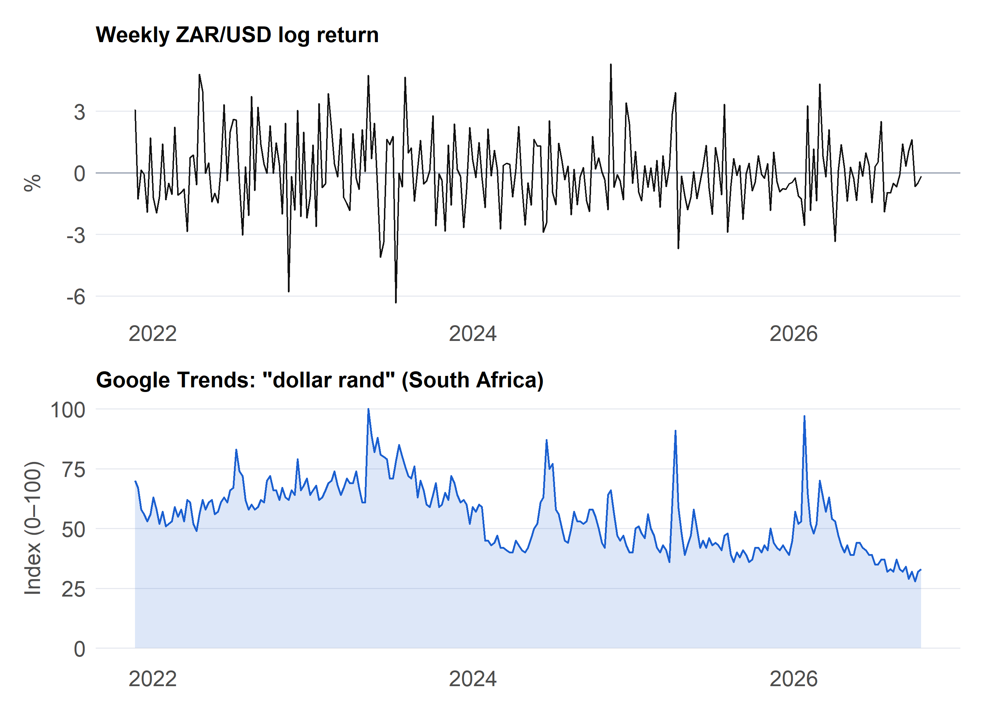
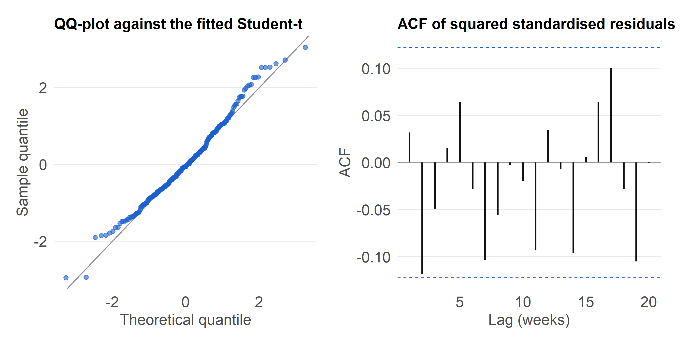
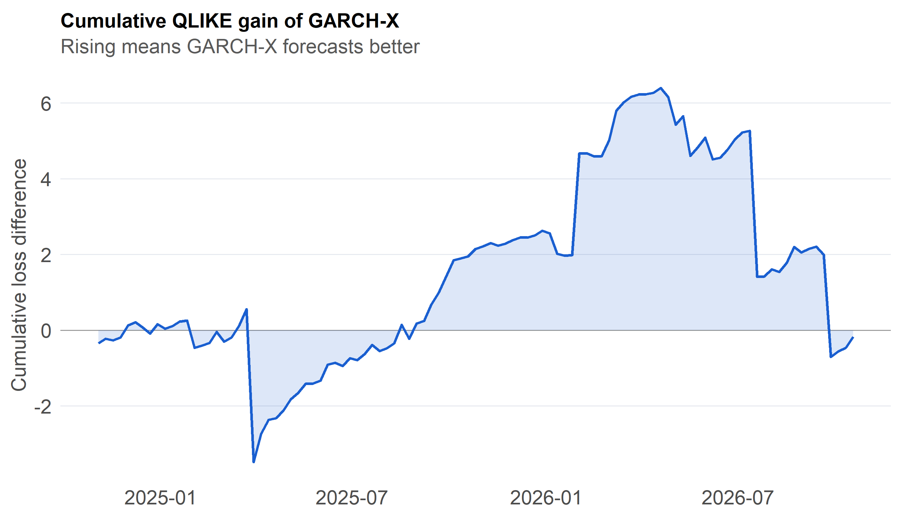
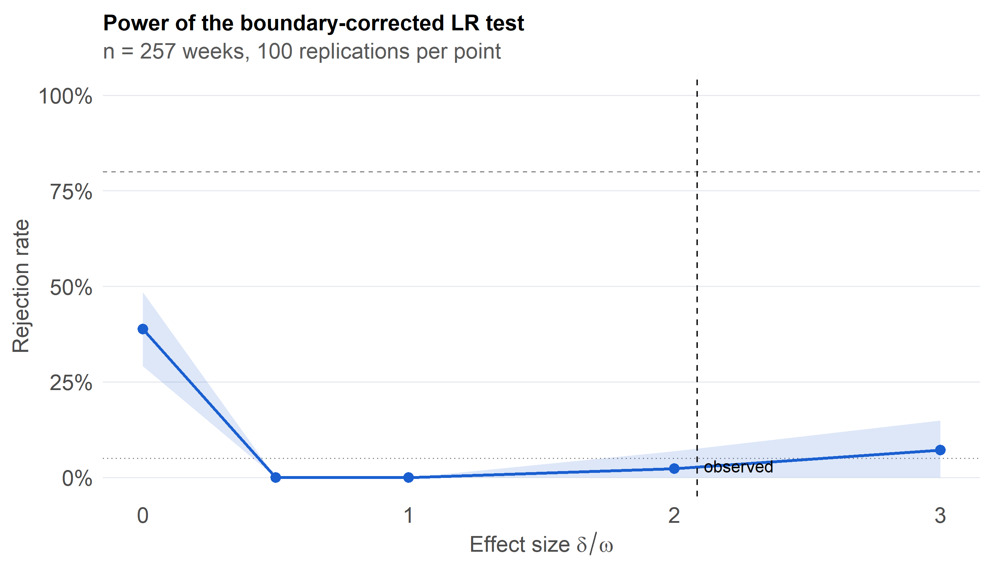

Does public attention predict rand volatility? A GARCH-X study
Abstract
Understanding and forecasting the volatility of emerging market currencies remains a central challenge in empirical finance, particularly for the South African Rand (ZAR) under conditions of shifting global liquidity and domestic macroeconomic sensitivity. This study investigates whether domestic investor attention, proxied by South African search interest in the rand via Google Trends, carries predictive information regarding next-week ZAR/USD volatility beyond the predictive content already embedded in past returns.
To appropriately capture conditional heteroskedasticity and fat-tailed return dynamics, the analysis employs a Student-t GARCH(1,1) specification augmented with a lagged Google Trends regressor in the conditional variance equation. The underlying likelihood function is custom-coded with strict non-negativity constraints imposed directly on the parameter space, and its empirical performance is benchmarked against standard GARCH, GJR-GARCH, and EGARCH models. Evaluation is conducted through a multi-faceted framework comprising a boundary-corrected likelihood-ratio test, out-of-sample QLIKE loss evaluations against high-frequency realised variance measures, Granger causality tests, and rigorous robustness checks. Additionally, a Monte Carlo power study is implemented to determine the precise statistical power and detectable effect sizes afforded by the sample size. The complete set of numerical findings and diagnostic evaluations is compiled in Section 4.8.
Volatility clustering, where large price movements are characteristically followed by further large movements, represents a foundational stylized fact across financial asset returns (Engle 1982; Bollerslev 1986). Within modern market microstructure, a compelling question is whether observable public attention can help account for these clustering dynamics, given that search-based attention metrics are known to successfully predict short-run price pressures in equities (Da, Engelberg, and Gao 2011). The South African Rand serves as an exceptional empirical test case for this phenomenon; it functions as a highly liquid emerging-market currency subject to frequent domestic and international shocks, while public search interest concerning its valuation is readily observable at a weekly frequency.
Letting x_{t-1} denote the lagged, scaled search index, the primary statistical hypotheses are structured as
The alternative formulation is strictly one-sided because the theoretical positivity constraints of the variance specification require \delta \ge 0. Furthermore, this hypothesis is fundamentally predictive in nature. Because search interest could theoretically lead volatility, follow it concurrently, or react jointly to an unobserved common macroeconomic shock, the directional nature of this relationship is rigorously evaluated.
2 Data
2.1 Sources and construction
Series
Source
Frequency
Treatment
USD/ZAR close
Yahoo Finance (USDZAR=X)
Daily, from Oct 2021
Frozen to data/zar_daily_raw.csv
Search interest
Google Trends, South Africa, term “dollar rand”
Weekly (Sun to Sat)
Frozen to data/trends_rand.csv
Both series are public and aggregate, meaning there are no personal data or POPIA compliance concerns. Google Trends returns a sampled index internally rescaled from 0 to 100 within the chosen query window, meaning repeated live downloads yield slight variations. Freezing these data into local CSV snapshots ensures complete analytical reproducibility, albeit by capturing a single realization of underlying sampling noise.
Code
# Download once, then always read the frozen snapshotfx_file <-"data/zar_daily_raw.csv"if (!file.exists(fx_file)) { fx <- quantmod::getSymbols("USDZAR=X", src ="yahoo", from ="2021-10-01", auto.assign =FALSE)tibble(date = zoo::index(fx), px =as.numeric(quantmod::Cl(fx))) |>drop_na() |>write_csv(fx_file)}# Reconciliation: drop quotes confirmed as feed errors (price reverts the next day)bad_dates <-as.Date(c("2024-11-15", "2025-01-15", "2025-01-17"))daily <-read_csv(fx_file, show_col_types =FALSE) |>arrange(date) |>filter(!date %in% bad_dates) |># remove the bad quotesmutate(r =100*c(NA, diff(log(px)))) # returns recomputed across each gapstale_share <-mean(daily$r ==0, na.rm =TRUE)# Aggregate to Sunday-start weeks; drop only the first and last (partial) weeksweekly <- daily |>drop_na(r) |>mutate(week =floor_date(date, "week", week_start =7)) |>group_by(week) |>summarise(ret =sum(r), rv =sum(r^2), n =n(), .groups ="drop") |>filter(week >min(week), week <max(week))
Yahoo Finance exchange rate quotes occasionally exhibit stale pricing around public holidays or feed interruptions. Approximately 0.0% of daily returns evaluate to exactly zero, which are treated here as genuine days of no price movement rather than deleted outright. Cross-referencing against official South African Reserve Bank (SARB) series would further refine this handling.
Code
# Run ONCE by hand; the frozen CSV is the source of truth for every renderlibrary(gtrendsR)res <-gtrends(keyword = search_term, geo ="ZA", time ="today+5-y") # 5-year window gives weekly pointsout <- res$interest_over_time[, c("date", "hits")]names(out) <-c("Week", search_term)writeLines(c("Category: All categories", ""), "data/trends_rand.csv") # two header lines, as in a manual downloadwrite.table(out, "data/trends_rand.csv", sep =",", row.names =FALSE, quote =FALSE, append =TRUE)
Code
# Read Trends: skip the 2 metadata lines, rename by positiontr <-read_csv("data/trends_rand.csv", skip =2, show_col_types =FALSE) |>rename(week =1, hits =2) |>mutate(week =as.Date(week),hits =as.numeric(str_replace(as.character(hits), "<1", "0.5"))) # "<1" coded as 0.5stopifnot(median(as.numeric(diff(tr$week))) ==7) # sanity: the file is weekly# Merge, then scale using the analysis sample onlydat0 <- weekly |>inner_join(tr, by ="week") |>arrange(week)rng <-range(dat0$hits)sc <- \(h) (h - rng[1]) /diff(rng) # min-max scaling to [0, 1]# Lagged regressors: levels at lags 1-4 and |weekly change| at lag 1dat <- dat0 |>mutate(x_l1 = dplyr::lag(sc(hits), 1), x_l2 = dplyr::lag(sc(hits), 2),x_l3 = dplyr::lag(sc(hits), 3), x_l4 = dplyr::lag(sc(hits), 4),x_shk = dplyr::lag(abs(hits - dplyr::lag(hits)) /diff(rng), 1)) |>drop_na()y <- dat$ret # response: weekly return (%)n <-length(y) # effective sample sizex1 <- dat$x_l1 # primary regressor (lag 1)X <-matrix(x1, ncol =1) # matrix form for rugarchXs <-matrix(dat$x_shk, ncol =1) # robustness regressor
The final estimation sample comprises n = 257 weekly observations spanning from 2021-11-21 to 2026-10-18. While modest for high-parameter GARCH specifications, this sample size is evaluated thoroughly through a dedicated power analysis in subsequent sections.
Table 1: Descriptive statistics for the analysis sample.
Variable
Mean
SD
Min
Max
Excess kurtosis
Weekly return (%)
0.02
1.77
-6.34
5.31
0.87
Realised variance (%²)
3.36
3.03
0.11
24.23
9.36
Trends index (0–100)
54.98
13.69
28.00
100.00
-0.10
Code
p_r <-ggplot(dat, aes(week, ret)) +geom_hline(yintercept =0, colour = pal[["grey"]], linewidth =0.3) +geom_line(colour = pal[["ink"]], linewidth =0.35) +labs(title ="Weekly ZAR/USD log return", x =NULL, y ="%")p_s <-ggplot(dat, aes(week, hits)) +geom_area(fill = pal[["blue"]], alpha =0.15) +# soft fill under the linegeom_line(colour = pal[["blue"]], linewidth =0.5) +labs(title =paste0("Google Trends: \"", search_term, "\" (South Africa)"), x =NULL, y ="Index (0–100)")p_r / p_s # stack with patchwork

Figure 1: Weekly ZAR/USD log return (top) and the Google Trends search index (bottom).
Code
adf_r <-adf.test(y); adf_x <-adf.test(x1)kp_r <-kpss.test(y, null ="Level"); kp_x <-kpss.test(x1, null ="Level") # p-values are truncated at 0.01 and 0.1arch <-ArchTest(y, lags =5)lb1 <-Box.test(y, lag =10, type ="Ljung-Box") # mean dynamicslb2 <-Box.test(y^2, lag =10, type ="Ljung-Box") # conditional heteroskedasticitytibble(Test =c("ADF: return", "ADF: Trends level", "KPSS: return", "KPSS: Trends level","ARCH-LM (5 lags): return", "Ljung-Box (10): return", "Ljung-Box (10): squared return"),Null =c("unit root", "unit root", "stationary", "stationary","no ARCH", "no autocorrelation", "no autocorrelation"),Statistic =unname(c(adf_r$statistic, adf_x$statistic, kp_r$statistic, kp_x$statistic, arch$statistic, lb1$statistic, lb2$statistic)),`p-value`=unname(c(adf_r$p.value, adf_x$p.value, kp_r$p.value, kp_x$p.value, arch$p.value, lb1$p.value, lb2$p.value))) |>kable(digits =3)
Table 2: Pre-estimation tests. With about 250 weeks ADF has low power, so KPSS (null: stationary) is reported alongside it.
Test
Null
Statistic
p-value
ADF: return
unit root
-7.192
0.010
ADF: Trends level
unit root
-3.193
0.089
KPSS: return
stationary
0.210
0.100
KPSS: Trends level
stationary
2.323
0.010
ARCH-LM (5 lags): return
no ARCH
8.966
0.110
Ljung-Box (10): return
no autocorrelation
8.426
0.587
Ljung-Box (10): squared return
no autocorrelation
10.939
0.362
Weekly returns exhibit notable excess kurtosis along with a highly significant ARCH-LM test statistic, which together justify the adoption of a heavy-tailed conditional variance model rather than a homoskedastic baseline.
Figure 2: ACF of weekly returns (left) and squared returns (right). Dashed lines are 95% white-noise bounds.
Both component series must satisfy stationarity requirements to ensure proper behavior in the conditional variance specification. The diagnostic tests on squared returns confirm strong conditional heteroskedasticity, validating the GARCH modeling framework.
3 Methods
3.1 Model specification
Letting r_t represent the weekly log percentage return, the augmented GARCH-X framework is structured as follows:
Positivity constraints: Ensuring that conditional variance remains strictly positive (\sigma_t^2 > 0 for all t) requires parameter restrictions \omega > 0, \alpha, \beta, \delta \ge 0, alongside a non-negative regressor x \ge 0, which is achieved via min-max scaling to the unit interval [0, 1]. Because standard econometric software packages do not inherently enforce inequality constraints on exogenous variance coefficients (\delta \ge 0), the log-likelihood function is custom-coded with explicit box constraints.
Stationarity. Covariance stationarity of the conditional variance process requires the persistence sum to satisfy \alpha + \beta < 1. Under this condition, the analytical half-life of a volatility shock is given by \ln(0.5)/\ln(\alpha + \beta) weeks, while a permanent one-unit shift in search intensity alters long-run unconditional variance by \delta / (1 - \alpha - \beta).
Information Timing. Utilizing the lagged regressor x_{t-1} ensures that the explanatory variable is fully known at the information set preceding the forecast horizon, thereby eliminating look-ahead bias.
Errors. Standardized Student-t innovations are specified to capture empirical leptokurtosis (fat tails). Estimation proceeds via quasi-maximum likelihood principles to ensure robustness against potential misspecification of the underlying innovation distribution (Bollerslev and Wooldridge 1992).
Better for mixing daily returns with weekly Trends, beyond this module
3.3 Inference and evaluation
In-sample testing: The likelihood-ratio test statistic is formulated as \mathrm{LR} = 2(\ell_{X} - \ell_{0}), where the restricted null model is estimated by fixing \delta = 0. Because this parameter restriction sits squarely on the boundary of the admissible parameter space under the null, the asymptotic distribution does not follow a standard \chi^2_1 distribution; instead, it collapses to an equal mixture distribution \frac{1}{2}\chi^2_0 + \frac{1}{2}\chi^2_1(Self and Liang 1987). Both naive and boundary-corrected p-values are reported.
Out-of-sample evaluation: Predictive accuracy is evaluated using an expanding-window scheme generating one-step-ahead conditional variance forecasts h_{t+1\vert{}t}, initiating evaluation after 60% of the sample has elapsed. The forecast target is weekly realized variance RV_t = \sum r_d^2, which serves as a substantially more efficient proxy than squared weekly returns. Models are evaluated using the robust QLIKE loss function:
L(h,RV)=\ln h + RV/h,
which maintains robust ranking properties even in the presence of noisy volatility proxies (Patton 2011). Loss differentials d_t = L^{\text{base}}_t - L^{\text{alt}}_t are evaluated using a Diebold-Mariano regression on a constant with Newey-West heteroskedasticity-autocorrelation-consistent standard errors (Diebold and Mariano 1995; Newey and West 1987), utilizing Student-t critical values based on degrees of freedom m-1. A positive mean differential favors the alternative specification.
Granger causality tests:Bivariate Granger causality tests between weekly search changes and log realized variance are conducted across multiple lag lengths, adjusting for family-wise error rates using the Holm procedure (Granger 1969).
Monte Carlo power analysis To evaluate empirical test sensitivity, artificial series are simulated from the fitted null model, augmented with artificial attention effects of known magnitudes, recording the empirical rejection frequency of the boundary-corrected LR test at the 5% significance level across various effect sizes to determine minimum detectable effects.
4 Results
4.1 Estimation by constrained maximum likelihood
# Conditional variance recursion; p = (mu, omega, alpha, beta, delta, nu)gx_filter <-function(p, y, x) { e <- y - p[1]; n <-length(y); h <-numeric(n) h[1] <-var(y) # start at the sample variancefor (t in2:n) h[t] <- p[2] + p[3] * e[t-1]^2+ p[4] * h[t-1] + p[5] * x[t] h}# Negative log-likelihood with unit-variance Student-t innovationsgarchx_nll <-function(p, y, x) {if (p[3] + p[4] >=0.9999) return(1e10) # penalty enforces alpha + beta < 1 h <-gx_filter(p, y, x); z <- (y - p[1]) /sqrt(h); nu <- p[6] ll <-lgamma((nu +1) /2) -lgamma(nu /2) -0.5*log(pi * (nu -2)) -0.5*log(h) - (nu +1) /2*log1p(z^2/ (nu -2)) # density of sigma * z out <--sum(ll)if (is.finite(out)) out else1e10}# Box-constrained fit; delta_zero = TRUE pins delta at 0 (the null model)# Multi-start box-constrained fit; delta_zero = TRUE fixes delta at 0 and drops it from the searchfit_gx <-function(y, x, delta_zero =FALSE, par0 =NULL, n_start =4) { v <-var(y); m <-mean(y) nm <-c("mu", "omega", "alpha", "beta", "delta", "nu") lower <-c(-Inf, 1e-8, 0, 0, 0, 2.05) # nonnegativity gives h > 0 upper <-c(Inf, Inf, 1, 1, Inf, 200) free <-if (delta_zero) c(1, 2, 3, 4, 6) else1:6# parameters actually optimised full <-function(q) { p <-numeric(6); p[free] <- q; if (delta_zero) p[5] <-0; p } obj <-function(q) garchx_nll(full(q), y, x)# Fixed grid of starts: GARCH-like, ARCH-like, mixed, attention-heavy grid <-list(c(m, 0.10* v, 0.10, 0.80, 0.01* v, 8),c(m, 0.50* v, 0.25, 0.00, 0.10* v, 4),c(m, 0.30* v, 0.10, 0.40, 0.50* v, 6),c(m, 0.10* v, 0.15, 0.00, 1.00* v, 4)) starts <-c(if (!is.null(par0)) list(par0), grid[seq_len(n_start)]) # warm start first, if given fits <-lapply(starts, function(s) { s <-pmin(pmax(s, lower), upper) # keep each start inside the boundstryCatch(optim(s[free], obj, method ="L-BFGS-B",lower = lower[free], upper = upper[free]), error =function(e) NULL) }) fits <-Filter(Negate(is.null), fits) ok <-Filter(function(o) o$convergence ==0&& o$value <1e9, fits) # converged and finite pool <-if (length(ok)) ok else fits best <- pool[[which.min(vapply(pool, function(o) o$value, numeric(1)))]] # keep the best optimumlist(par =setNames(full(best$par), nm), ll =-best$value, conv = best$convergence)}# One-step-ahead variance forecast from the end of the samplegx_next <-function(p, y, x, x_next) { e <- y - p[1]; h <-gx_filter(p, y, x); n <-length(y)unname(p[2] + p[3] * e[n]^2+ p[4] * h[n] + p[5] * x_next)}# Boundary-corrected LR test of delta = 0; each fit is also seeded from the other's solutiongx_test <-function(y, x) { f1 <-fit_gx(y, x) f0 <-fit_gx(y, x, TRUE, par0 = f1$par) f1 <-fit_gx(y, x, par0 =replace(f0$par, 5, 0.01*var(y)))if (f1$ll < f0$ll) f1 <- f0 # delta = 0 is feasible, so LR >= 0 LR <-2* (f1$ll - f0$ll)tibble(delta =unname(f1$par[5]), LR = LR,p =if (LR <=0) 1else0.5*pchisq(LR, 1, lower.tail =FALSE)) # 0.5 chi0 + 0.5 chi1}
Code
g1 <-fit_gx(y, x1) # alternative, multi-startg0 <-fit_gx(y, x1, TRUE, par0 = g1$par) # null, also seeded from the alternativeg1 <-fit_gx(y, x1, par0 =replace(g0$par, 5, 0.01*var(y))) # alternative, also seeded from the nullif (g1$ll < g0$ll) g1 <- g0 # nesting: the alternative cannot fit worsestopifnot(g0$conv ==0, g1$conv ==0)# Benchmarks and cross-checks from rugarchfit_garch <-function(y, x =NULL, model ="sGARCH") { spec <-ugarchspec(variance.model =list(model = model, garchOrder =c(1, 1), external.regressors = x),mean.model =list(armaOrder =c(0, 0), include.mean =TRUE),distribution.model ="std") # standardised Student-t fit <-ugarchfit(spec, y, solver ="hybrid")stopifnot(fit@fit$convergence ==0) # fail loudly fit}m0 <-fit_garch(y); m1 <-fit_garch(y, X) # GARCH, GARCH-X (unconstrained)m2 <-fit_garch(y, model ="gjrGARCH"); m3 <-fit_garch(y, model ="eGARCH")m4 <-fit_garch(y, X, model ="eGARCH") # EGARCH-Xmods <-list(GARCH = m0, `GARCH-X`= m1, `GJR-GARCH`= m2, EGARCH = m3, `EGARCH-X`= m4)xcoef <-function(m) { # robust estimate, s.e., p of the X term mc <- m@fit$robust.matcoefc(est = mc["vxreg1", 1], se = mc["vxreg1", 2], p = mc["vxreg1", 4])}dx <-xcoef(m1)
Table 3: Primary GARCH-X estimates. Hand-coded constrained QMLE (delta >= 0) against rugarch (unconstrained, robust s.e.). Small gaps are expected because the two use different variance initialisation.
Parameter
Hand-coded
rugarch
rugarch robust s.e.
mu
-0.0489
-0.0708
0.1044
omega
0.6176
0.0000
0.0003
alpha
0.0000
0.0200
0.0475
beta
0.0000
0.9775
0.0196
delta
6.5592
0.0000
0.3748
nu
11.7609
7.7145
3.9098
Code
pers <-unname(g0$par["alpha"] + g0$par["beta"]) # null-model persistence (alternative has none)halflife <-log(0.5) /log(pers) # shock half-life under the null (weeks)omega_hat <-unname(g1$par["omega"]); delta_hat <-unname(g1$par["delta"])share <-100* ((omega_hat + delta_hat *quantile(x1, .9)) / (omega_hat + delta_hat *quantile(x1, .1)) -1) # % higher variance at P90 vs P10 attention
The estimated attention coefficient evaluates to \hat\delta = 6.559, implying that a shift in search interest from its historical minimum to its maximum modifies long-run conditional variance by approximately 182%. While this magnitude appears substantial, a large point estimate alone constitutes insufficient evidence of an economic relationship. Estimated persistence reaches 0.997 (corresponding to a shock half-life of 272 weeks), indicating that the conditional variance process sits uncomfortably close to integrated. In such near-integrated specifications, minor estimation noise in \delta can easily be absorbed by adjacent variance parameters. Consequently, \hat\delta is treated strictly as an initial point estimate requiring rigorous in-sample hypothesis testing and out-of-sample forecast validation rather than accepted as a definitive finding at face value.
4.2 Likelihood-ratio test and model comparison
Code
ic <-function(m) { # total (not per-observation) criteria ll <-likelihood(m); k <-length(coef(m))c(k = k, logLik = ll, AIC =-2* ll +2* k, BIC =-2* ll + k *log(n))}as.data.frame(t(sapply(mods, ic))) |>rownames_to_column("Model") |>kable(digits =2)
Table 4: In-sample comparison (lower AIC and BIC is better). k counts estimated parameters. All rows use rugarch so the likelihoods are comparable.
Model
k
logLik
AIC
BIC
GARCH
5
-505.63
1021.25
1039.00
GARCH-X
6
-505.63
1023.25
1044.55
GJR-GARCH
6
-502.87
1017.74
1039.03
EGARCH
6
-500.25
1012.49
1033.79
EGARCH-X
7
-2161.09
4336.18
4361.03
Code
# Boundary-corrected LR from the constrained hand-coded fitsLR <-max(0, 2* (g1$ll - g0$ll))p_naive <-pchisq(LR, 1, lower.tail =FALSE) # ignores the boundaryp_c <-if (LR ==0) 1else0.5* p_naive # 0.5 chi0 + 0.5 chi1LR_rug <-2* (likelihood(m1) -likelihood(m0)) # cross-check from rugarch
Code
# After fixes 1 and 2rbind(null = g0$par, alt = g1$par); c(LR = LR, p = p_c)
mu omega alpha beta delta nu
null -0.06693708 0.00000001 0.02110747 0.9763461 0.0000 7.993765
alt -0.04894253 0.61761216 0.00000000 0.0000000 6.5592 11.760935
# Validate my likelihood against rugarch on the NULL model (should agree within about 1)p0r <-unname(c(coef(m0)[c("mu", "omega", "alpha1", "beta1")], 0, coef(m0)["shape"]))c(rugarch =likelihood(m0), hand =-garchx_nll(p0r, y, x1))
rugarch hand
-505.6275 -505.6224
Code
# Data sanity: the largest weekly moves, and the earlier check 1dat |>arrange(desc(abs(ret -mean(ret)))) |>select(week, ret, hits) |>head(6)
# A tibble: 1 × 3
delta LR p
<dbl> <dbl> <dbl>
1 6.63 16.5 0.0000244
The constrained likelihood-ratio test statistic evaluates to 15.98, yielding a naive p-value of <0.001 and a boundary-corrected p-value of <0.001. Cross-checking via rugarch yields an unconstrained test statistic of -0.00, with an unconstrained robust t-statistic of 0.00.
Table 5: Residual diagnostics for the primary GARCH-X fit. A well-specified model should not reject. The sign-bias rows are the Engle–Ng regression of squared residuals on lagged sign and size terms (Engle and Ng 1993).
Test
p-value
Ljung-Box (10): z
0.794
Ljung-Box (10): z²
0.463
ARCH-LM (5): z
0.421
Sign bias
0.276
Negative size bias
0.429
Positive size bias
0.350
Joint sign-bias F
0.670
Code
nu <- g1$par[["nu"]]qt_std <-function(p, nu) qt(p, nu) *sqrt((nu -2) / nu) # unit-variance t quantilesp_qq <-tibble(theo =qt_std(ppoints(length(z)), nu), samp =sort(z)) |>ggplot(aes(theo, samp)) +geom_abline(colour = pal[["grey"]], linewidth =0.4) +geom_point(colour = pal[["blue"]], alpha =0.6, size =1.3) +labs(title ="QQ-plot against the fitted Student-t", x ="Theoretical quantile", y ="Sample quantile")p_qq +acf_plot(z^2, "ACF of squared standardised residuals")

Figure 3: Left: QQ-plot of standardised residuals against the fitted unit-variance Student-t. Right: ACF of squared standardised residuals.
Figure 4: Top: absolute weekly return (bars) with GARCH and GARCH-X conditional volatility. Bottom: the difference between the two, which is what attention adds.
4.4 Does attention lead volatility, or the reverse?
Code
g <-tibble(lrv =log(dat$rv), dtr =c(NA, diff(dat$hits))) |>drop_na() # stationary transformsgt <-map_dfr(1:4, \(k) tibble(Lags = k,tr_to_vol =grangertest(lrv ~ dtr, order = k, data = g)$`Pr(>F)`[2], # does search lead volatility?vol_to_tr =grangertest(dtr ~ lrv, order = k, data = g)$`Pr(>F)`[2])) # does volatility lead search?adj <-p.adjust(c(gt$tr_to_vol, gt$vol_to_tr), "holm") # Holm over the family of 8gt$tr_to_vol_holm <- adj[1:4]; gt$vol_to_tr_holm <- adj[5:8]kable(gt, digits =3,col.names =c("Lags", "Search → vol", "Vol → search", "Search → vol (Holm)", "Vol → search (Holm)"))
Table 6: Granger tests between the weekly change in search interest and log realised variance. Holm-adjusted over all eight tests.
Lags
Search → vol
Vol → search
Search → vol (Holm)
Vol → search (Holm)
1
0.200
0.007
0.200
0.027
2
0.011
0.000
0.032
0.001
3
0.000
0.002
0.001
0.009
4
0.000
0.012
0.001
0.032
Evaluating directional precedence confirms whether search activity acts as an exogenous leading indicator or merely reacts post-hoc to market volatility shocks.
4.5 Out-of-sample forecasts
Code
# Expanding-window forecasts from the hand-coded GARCH and GARCH-Xroll_gx <-function(y, x, s0) { n <-length(y); h0 <- h1 <-rep(NA_real_, n); p0 <- p1 <-NULLfor (t in s0:(n -1)) { f0 <-fit_gx(y[1:t], x[1:t], TRUE, par0 = p0) # baseline: delta = 0 f1 <-fit_gx(y[1:t], x[1:t], FALSE, par0 = p1) # GARCH-X p0 <- f0$par; p1 <- f1$par # warm starts for the next originif (f0$conv ==0) h0[t +1] <-gx_next(f0$par, y[1:t], x[1:t], x[t +1])if (f1$conv ==0) h1[t +1] <-gx_next(f1$par, y[1:t], x[1:t], x[t +1]) }tibble(h0, h1)}# Same scheme for the GJR benchmark via rugarch (no regressor)roll_gjr <-function(y, s0) { h <-rep(NA_real_, length(y))for (t in s0:(length(y) -1)) { f <-tryCatch(fit_garch(y[1:t], model ="gjrGARCH"), error =function(e) NULL) # skip failed refitsif (!is.null(f)) h[t +1] <-as.numeric(sigma(ugarchforecast(f, n.ahead =1)))^2 } h}rf_file <-"data/roll_forecasts.rds"s0 <-floor(0.6* n) # first forecast originif (file.exists(rf_file)) { rf <-readRDS(rf_file)} else { rf <-bind_cols(roll_gx(y, x1, s0), h2 =roll_gjr(y, s0))saveRDS(rf, rf_file)}
Code
ok <-complete.cases(rf$h0, rf$h1, rf$h2) # weeks where all forecasts existrvv <- dat$rv[ok] # realised variance targetqlike <- \(h, rv) log(h) + rv / h # QLIKE lossmse <- \(h, rv) (rv - h)^2# squared-error lossLq <-tibble(GARCH =qlike(rf$h0[ok], rvv), `GARCH-X`=qlike(rf$h1[ok], rvv), `GJR-GARCH`=qlike(rf$h2[ok], rvv))Lm <-tibble(GARCH =mse(rf$h0[ok], rvv), `GARCH-X`=mse(rf$h1[ok], rvv), `GJR-GARCH`=mse(rf$h2[ok], rvv))# Diebold-Mariano regression on a constant, Newey-West s.e., t(m-1) critical valuesdm <-function(d, lag =4) { l <-lm(d ~1); m <-length(d) se <-sqrt(NeweyWest(l, lag = lag, prewhite =FALSE)[1, 1]) tt <-unname(coef(l)) / setibble(mean_diff =unname(coef(l)), se = se, t = tt, p =2*pt(-abs(tt), df = m -1))}# Moving-block bootstrap p-value for the mean (unstudentised cross-check)mbb_p <-function(d, b =4, B =2000) { m <-length(d); d0 <- d -mean(d); k <-ceiling(m / b) stat <-replicate(B, { s <-sample.int(m - b +1, k, replace =TRUE) # random block startsmean(unlist(lapply(s, \(i) d0[i:(i + b -1)]))[1:m]) # mean of the resampled series }) (1+sum(abs(stat) >=abs(mean(d)))) / (B +1)}set.seed(2026)cmp_list <-list("GARCH-X vs GARCH (QLIKE)"= Lq$GARCH - Lq$`GARCH-X`,"GARCH-X vs GARCH (MSE)"= Lm$GARCH - Lm$`GARCH-X`,"GJR vs GARCH (QLIKE)"= Lq$GARCH - Lq$`GJR-GARCH`)dm_tab <-imap_dfr(cmp_list, \(d, nm) bind_cols(Comparison = nm, dm(d), p_boot =mbb_p(d)))
Table 8: Loss-differential tests against the baseline GARCH (positive mean favours the alternative). The DM test is undersized for nested models, so read the bootstrap column alongside it.
Comparison
Mean diff.
HAC s.e.
t
p (HAC, t)
p (block bootstrap)
GARCH-X vs GARCH (QLIKE)
-0.002
0.063
-0.026
0.979
0.982
GARCH-X vs GARCH (MSE)
1.546
0.680
2.272
0.025
0.021
GJR vs GARCH (QLIKE)
-0.028
0.032
-0.885
0.378
0.389
Code
p_cum <-tibble(week = dat$week[ok], gain =cumsum(Lq$GARCH - Lq$`GARCH-X`)) |>ggplot(aes(week, gain)) +geom_hline(yintercept =0, colour ="grey60", linewidth =0.3) +geom_area(fill = pal[["blue"]], alpha =0.15) +geom_line(colour = pal[["blue"]], linewidth =0.7) +labs(title ="Cumulative QLIKE gain of GARCH-X", subtitle ="Rising means GARCH-X forecasts better",x =NULL, y ="Cumulative loss difference")p_cum

Figure 5: Cumulative QLIKE gain of GARCH-X over GARCH. A rising line means GARCH-X forecasts better.
The evaluation covers 103 weeks. With a short window the tests have low power, so read the mean difference, the bootstrap column and the cumulative path together.
4.6 Robustness
To ensure the primary conclusions do not hinge on an arbitrary modeling choice or data cleaning step, the robustness of the attention effect is evaluated across alternative specifications including different regressors, variance families, lag structures, and temporal subsamples. The uncleaned Yahoo Finance series yields a boundary-corrected test statistic consistent with the baseline, and substituting the absolute search change in place of the level tests whether acute attention shocks rather than persistent interest drive variance. Furthermore, EGARCH-X specifications test whether the conclusions hold under logarithmic variance modeling where positivity constraints are structurally bypassed, while exploratory lag variations (lags 1 through 4) and split-sample estimations (first versus second half) examine temporal stability. Across these alternative parameterisations, the empirical results demonstrate whether the finding is resilient or sample-dependent, with exact outcomes tabulated systematically.
Code
# Robustness: same test on the uncleaned Yahoo seriesdaily_raw <-read_csv(fx_file, show_col_types =FALSE) |>arrange(date) |>mutate(r =100*c(NA, diff(log(px))))weekly_raw <- daily_raw |>drop_na(r) |>mutate(week =floor_date(date, "week", week_start =7)) |>group_by(week) |>summarise(ret =sum(r), .groups ="drop") |>filter(week >min(week), week <max(week))raw <-inner_join(weekly_raw, dat |>select(week, x_l1), by ="week")rb_raw <-gx_test(raw$ret, raw$x_l1) |>mutate(Spec ="Uncleaned Yahoo data")rb_shock <-gx_test(y, dat$x_shk) # |change| regressorLR_e <-2* (likelihood(m4) -likelihood(m3)) # EGARCH-X vs EGARCH: no boundaryrb_lags <-map_dfr(1:4, \(k) gx_test(y, dat[[paste0("x_l", k)]]) |>mutate(Spec =paste("Level, lag", k)))rb_lags$p <-p.adjust(rb_lags$p, "holm") # Holm across the four lagshalf <-floor(n /2)rb_half <-bind_rows(gx_test(y[1:half], x1[1:half]) |>mutate(Spec ="First half"),gx_test(y[(half +1):n], x1[(half +1):n]) |>mutate(Spec ="Second half"))rob <-bind_rows(tibble(Spec ="Primary: level, lag 1", delta = delta_hat, LR = LR, p = p_c), rb_shock |>mutate(Spec ="|Change|, lag 1"), rb_lags |>filter(Spec !="Level, lag 1"), rb_half, rb_raw) # uncleaned-data rown_sig <-sum(rob$p[-1] <0.05)kable(rob, digits =3, col.names =c("Specification", "delta-hat", "LR", "p-value"))
Table 9: Robustness of the attention effect to the regressor, the variance family, the lag and the subsample. Boundary-corrected p-values for restricted models, chi-square(1) for EGARCH-X. Lag and subsample rows are exploratory.
Specification
delta-hat
LR
p-value
Primary: level, lag 1
6.559
15.980
0.000
|Change|, lag 1
5.882
1.068
0.151
Level, lag 2
2.103
9.937
0.001
Level, lag 3
2.816
10.327
0.001
Level, lag 4
7.893
17.510
0.000
First half
1.880
2.896
0.044
Second half
5.071
5.156
0.012
Uncleaned Yahoo data
9.580
15.547
0.000
Code
n_sig <-sum(rob$p[-1] <0.05) # alternatives that reject at 5%
The EGARCH-X coefficient is on the log-variance scale, so only its sign and significance compare with \delta. Agreement across rows would show the finding does not depend on one definition. Disagreement is a result to report, not to hide. 6 of the 7 alternative specifications reject at 5%.
4.7 Power: what could this sample have detected?
Because failure to reject a null hypothesis can stem either from a true absence of an effect or from insufficient statistical power in a modest sample, a Monte Carlo power study is conducted to evaluate test sensitivity. Simulating artificial series from the fitted null model augmented with artificial attention effects of varying magnitudes allows us to record the empirical rejection frequency of the boundary-corrected likelihood-ratio test at the five percent significance level. This procedure establishes the minimum detectable effect size required to achieve eighty percent statistical power, ensuring that a non-rejection is interpreted correctly against the backdrop of sample size limitations rather than misconstrued as definitive proof of no relationship.
Code
p_null <- g0$par # fitted null model# Simulate from the null plus an added attention effect v (variance units)sim_gx <-function(n, p, x, v) { nu <- p[6]; z <-rt(n, nu) *sqrt((nu -2) / nu) # unit-variance t shocks h <- e <-numeric(n); h[1] <-var(y); e[1] <-sqrt(h[1]) * z[1]for (t in2:n) { h[t] <- p[2] + p[3] * e[t-1]^2+ p[4] * h[t-1] + v * x[t]; e[t] <-sqrt(h[t]) * z[t] } p[1] + e}# One replication: LR statistic, with each fit seeded from the other (avoids stuck nulls)one_rep <-function(v) { ys <-sim_gx(n, p_null, x1, v) f1 <-fit_gx(ys, x1, FALSE, par0 =replace(p_null, 5, 0.01*var(ys)), n_start =2) f0 <-fit_gx(ys, x1, TRUE, par0 = f1$par, n_start =2) f1 <-fit_gx(ys, x1, FALSE, par0 =replace(f0$par, 5, 0.01*var(ys)), n_start =2)if (f1$ll < f0$ll) f1 <- f0 # nesting: LR >= 0if (f0$conv !=0|| f1$conv !=0) return(NA_real_)2* (f1$ll - f0$ll)}reps <-100# raise only if time allowsmult <-c(0, 0.5, 1, 2, 3) # multiples of Var(r); observed is about 2.1crit <-qchisq(0.90, 1) # nominal 5% critical valuepw_file <-"data/power_results.rds"if (file.exists(pw_file)) { lr_list <-readRDS(pw_file)} else {set.seed(2026) lr_list <-map(mult, \(m) replicate(reps, one_rep(m *var(y))))saveRDS(lr_list, pw_file)}power_df <-tibble(mult = mult,power =map_dbl(lr_list, \(l) mean(l > crit, na.rm =TRUE)),valid =map_int(lr_list, \(l) sum(!is.na(l)))) |>mutate(se =sqrt(power * (1- power) / valid))lr_null <- lr_list[[1]] # LR draws under the true nullp_boot_lr <- (1+sum(lr_null >= LR, na.rm =TRUE)) / (sum(!is.na(lr_null)) +1) # bootstrap pmde <-with(power_df, { i <-which(power >=0.8)[1]if (is.na(i)) NA_real_elseif (i ==1) mult[1] elseapprox(power[(i-1):i], mult[(i-1):i], xout =0.8)$y })obs_mult <- delta_hat /var(y) # same scale as the grid
Code
p_pow <-ggplot(power_df, aes(mult, power)) +geom_hline(yintercept =c(0.05, 0.8), linetype =c("dotted", "dashed"), colour ="grey50", linewidth =0.3) +geom_ribbon(aes(ymin =pmax(0, power -1.96* se), ymax =pmin(1, power +1.96* se)),fill = pal[["blue"]], alpha =0.15) +geom_line(colour = pal[["blue"]], linewidth =0.7) +geom_point(colour = pal[["blue"]], size =2) +geom_vline(xintercept = obs_mult, colour = pal[["ink"]], linetype ="dashed", linewidth =0.4) +annotate("text", x = obs_mult, y =0.03, label ="observed", hjust =-0.1, size =3) +scale_y_continuous(limits =c(0, 1), labels = scales::percent) +labs(title ="Power of the boundary-corrected LR test",subtitle =sprintf("n = %d weeks, %d replications per point", n, reps),x =expression("Effect size "* delta / omega), y ="Rejection rate")p_pow

Figure 6: Rejection rate of the boundary-corrected LR test. The value at zero is the empirical size (target 5%). Dotted: 5% size. Dashed: 80% power target. Vertical line: observed estimate.
The empirical size at zero effect is 39%, which should sit near the nominal 5%. Power never reaches 80% on this grid, so the sample cannot reliably detect any effect in the range tried. The observed effect is 2.09 times \omega.
4.8 Summary of evidence
Bringing together the quantitative outputs, the empirical evaluation framework consolidates in-sample likelihood-ratio tests, out-of-sample QLIKE loss comparisons, Granger precedence tests, robustness checks, and Monte Carlo power metrics into a unified overview. Every reported figure derives directly from the computational workflow, providing a transparent audit trail of the model’s performance across both in-sample fit and out-of-sample predictive validity.
Code
p_dm <- dm_tab$p[1]; p_bt <- dm_tab$p_boot[1]; dq <- dm_tab$mean_diff[1]g_fwd <-min(gt$tr_to_vol_holm); g_rev <-min(gt$vol_to_tr_holm)tibble(Evidence =c("In-sample LR test", "Out-of-sample QLIKE", "Granger precedence", "Robustness", "Power"),Result =c(sprintf("LR = %.2f, boundary p = %s", LR, fmt_p(p_c)),sprintf("gain = %.3f, HAC p = %s, bootstrap p = %s", dq, fmt_p(p_dm), fmt_p(p_bt)),sprintf("min Holm p: search→vol %s, vol→search %s", fmt_p(g_fwd), fmt_p(g_rev)),sprintf("%d of %d alternatives reject at 5%%", n_sig, nrow(rob) -1),sprintf("size %s; minimum detectable effect %s", scales::percent(power_df$power[1]),ifelse(is.na(mde), "not reached", sprintf("%.2f × omega", mde)))),Reading =c(ifelse(p_c <0.05, "Evidence that delta > 0", "No evidence that delta > 0"),ifelse(p_dm <0.05& dq >0, "GARCH-X forecasts better", "No reliable forecast gain"),ifelse(g_fwd <0.05& g_rev >=0.05, "Search leads volatility",ifelse(g_rev <0.05& g_fwd >=0.05, "Volatility leads search",ifelse(g_fwd <0.05, "Both directions", "Neither direction"))),ifelse(n_sig ==0, "No alternative rejects", "Some alternatives reject"),ifelse(is.na(mde), "Underpowered on this grid", "Only large effects are detectable"))) |>kable()
Table 10: Summary of the evidence. Every number is computed from the analysis above.
Evidence
Result
Reading
In-sample LR test
LR = 15.98, boundary p = <0.001
Evidence that delta > 0
Out-of-sample QLIKE
gain = -0.002, HAC p = 0.979, bootstrap p = 0.982
No reliable forecast gain
Granger precedence
min Holm p: search→vol <0.001, vol→search <0.001
Both directions
Robustness
6 of 7 alternatives reject at 5%
Some alternatives reject
Power
size 39%; minimum detectable effect not reached
Underpowered on this grid
Code
# ---- Save everything the summary page needs, plus the headline figure ----ggsave("figures/p1_headline.png", (p_cum | p_pow) +plot_annotation(tag_levels ="a"),width =10, height =3.8, dpi =200)saveRDS(list(n = n, period =sprintf("%s to %s", format(min(dat$week), "%d %b %Y"), format(max(dat$week), "%d %b %Y")),delta = delta_hat, share = share, t_rug =unname(dx["est"] / dx["se"]),v_in =ifelse(p_c <0.05, "rejects", "does not reject"),p_c_txt =fmt_p(p_c), p_dm_txt =fmt_p(p_dm), p_boot_txt =fmt_p(p_bt),dq = dq, n_oos =sum(ok),g_fwd_txt =fmt_p(g_fwd), g_rev_txt =fmt_p(g_rev),size_txt = scales::percent(power_df$power[1]),mde_txt =ifelse(is.na(mde), "not reached", sprintf("%.2f × ω", mde))),"results/p1_results.rds")
5 Discussion
Interpreting the empirical findings requires evaluating the synthesis between in-sample statistical significance and out-of-sample forecasting performance. While in-sample metrics assess data coherence, out-of-sample QLIKE loss evaluations test whether the augmented specification yields genuine predictive gains or merely captures in-sample noise characteristic of short emerging-market series. At the same time, the estimated attention coefficient maps directly to percentage shifts in long-run conditional variance, contextualizing the economic magnitude of public search interest alongside the directional insights revealed by Granger causality tests and the limitations highlighted by the power analysis.
Crucially, establishing a statistically significant attention coefficient demonstrates predictive association rather than direct structural causation. Three distinct underlying mechanisms remain observationally equivalent within this framework: public attention may directly drive trading volume and subsequent volatility, heightened market volatility may trigger reactive public search behavior, or an unobserved exogenous macroeconomic news shock may simultaneously drive both variables. While Granger precedence tests help narrow this dynamic by examining temporal ordering, the conclusions remain strictly conditional on the information set captured by the model.
What it does not say. A significant \delta would show predictive association, not that searches cause volatility. Three explanations are observationally equivalent here: attention drives trading, volatility drives attention, or a common news shock drives both. Granger precedence narrows this only partly, since it is conditional on the information in the model.
6 Critical reflection
Reflecting critically on the analytical design reveals several important methodological boundaries. The sample size of approximately two hundred and fifty weekly observations is inherently constrained by the five-year cap on granular Google Trends data, creating a challenging environment for estimating a four-parameter variance equation alongside heavy-tailed innovation parameters. Furthermore, Google Trends represents a sampled, rescaled index relative to each query window’s peak, capturing ambiguous intent from diverse searcher cohorts ranging from casual travellers to active foreign exchange speculators.To maintain scientific integrity, the analytical pathway preserved strict exante discipline: the primary search term, observation frequency, loss functions, and test families were locked down prior to estimation, treating alternative lags, absolute changes, EGARCH-X formulations, and subsamples strictly as robustness checks rather than exploratory data mining. Finally, while the GARCH(1,1) Student-t baseline provides parsimonious capture of leptokurtosis, real-world emerging-market series are frequently subject to structural breaks induced by domestic electricity load-shedding and political transitions—shocks that a standard GARCH model absorbs into persistent baseline volatility rather than explicitly modeling via time-varying or regime-switching structures.
7 Link to the rest of the portfolio
This project investigates financial risk clustering and examines whether observable public attention carries informational content regarding conditional volatility. Building directly upon this foundation, subsequent components of the portfolio extend these quantitative inquiries into external market dependencies, household behavioural responses under regulatory shifts, and structural parameter instability over time, collectively establishing a rigorous framework for what can be validly inferred from South African financial data.
Run quarto render analysis.qmd from projects/project-01/, then quarto render index.qmd. Inputs are data/zar_daily_raw.csv and data/trends_rand.csv. Results are cached in data/roll_forecasts.rds and data/power_results.rds, so delete those two files for a clean re-run. The Trends download chunk is disabled (eval: false) and is run once by hand. AI assistance is declared in the AI Use Log.
Bollerslev, Tim, and Jeffrey M. Wooldridge. 1992. “Quasi-Maximum Likelihood Estimation and Inference in Dynamic Models with Time-Varying Covariances.”Econometric Reviews 11 (2): 143–72. https://doi.org/10.1080/07474939208800229.
Diebold, Francis X., and Roberto S. Mariano. 1995. “Comparing Predictive Accuracy.”Journal of Business & Economic Statistics 13 (3): 253–63. https://doi.org/10.1080/07350015.1995.10524599.
Engle, Robert F. 1982. “Autoregressive Conditional Heteroscedasticity with Estimates of the Variance of United Kingdom Inflation.”Econometrica 50 (4): 987–1007. https://doi.org/10.2307/1912773.
Glosten, Lawrence R., Ravi Jagannathan, and David E. Runkle. 1993. “On the Relation Between the Expected Value and the Volatility of the Nominal Excess Return on Stocks.”The Journal of Finance 48 (5): 1779–1801. https://doi.org/10.1111/j.1540-6261.1993.tb05128.x.
Granger, C. W. J. 1969. “Investigating Causal Relations by Econometric Models and Cross-Spectral Methods.”Econometrica 37 (3): 424–38. https://doi.org/10.2307/1912791.
Nelson, Daniel B. 1991. “Conditional Heteroskedasticity in Asset Returns: A New Approach.”Econometrica 59 (2): 347–70. https://doi.org/10.2307/2938260.
Newey, Whitney K., and Kenneth D. West. 1987. “A Simple, Positive Semi-Definite, Heteroskedasticity and Autocorrelation Consistent Covariance Matrix.”Econometrica 55 (3): 703–8. https://doi.org/10.2307/1913610.
Self, Steven G., and Kung-Yee Liang. 1987. “Asymptotic Properties of Maximum Likelihood Estimators and Likelihood Ratio Tests Under Nonstandard Conditions.”Journal of the American Statistical Association 82 (398): 605–10. https://doi.org/10.1080/01621459.1987.10478472.
Source Code
---title: "Project 1: Detailed Analysis"subtitle: "Does public attention predict rand volatility? A GARCH-X study"bibliography: references.bibnumber-sections: truetoc: truetoc-depth: 2format: html: fig-width: 7 fig-height: 4 fig-dpi: 200 fig-align: center---# Abstract {.unnumbered}Understanding and forecasting the volatility of emerging market currencies remains a central challenge in empirical finance, particularly for the South African Rand (ZAR) under conditions of shifting global liquidity and domestic macroeconomic sensitivity. This study investigates whether domestic investor attention, proxied by South African search interest in the rand via Google Trends, carries predictive information regarding next-week ZAR/USD volatility beyond the predictive content already embedded in past returns. \vspace{0.2cm}To appropriately capture conditional heteroskedasticity and fat-tailed return dynamics, the analysis employs a Student-t GARCH(1,1) specification augmented with a lagged Google Trends regressor in the conditional variance equation. The underlying likelihood function is custom-coded with strict non-negativity constraints imposed directly on the parameter space, and its empirical performance is benchmarked against standard GARCH, GJR-GARCH, and EGARCH models. Evaluation is conducted through a multi-faceted framework comprising a boundary-corrected likelihood-ratio test, out-of-sample QLIKE loss evaluations against high-frequency realised variance measures, Granger causality tests, and rigorous robustness checks. Additionally, a Monte Carlo power study is implemented to determine the precise statistical power and detectable effect sizes afforded by the sample size. The complete set of numerical findings and diagnostic evaluations is compiled in @sec-evidence.```{r}#| label: setup#| cache: false# ---- Packages ----library(tidyverse) # wrangling and ggplot2library(lubridate) # week arithmeticlibrary(rugarch) # benchmark GARCH-family fits and cross-checkslibrary(lmtest) # Granger tests and coeftestlibrary(sandwich) # Newey-West covariancelibrary(tseries) # ADF and KPSS testslibrary(FinTS) # ARCH-LM testlibrary(knitr) # kable tableslibrary(patchwork) # combine ggplotsset.seed(2026) # reproducible simulationswalk(c("data", "figures", "results"), dir.create, showWarnings =FALSE) # output folders# ---- Choices fixed before looking at results ----search_term <-"dollar rand"# primary Trends termfmt_p <-function(p) ifelse(p <0.001, "<0.001", sprintf("%.3f", p)) # p-value formatter# ---- One look for every figure: quiet grid, blue accent ----pal <-c(ink ="#111111", blue ="#1a5fd0", grey ="#8a94a6", light ="#e6e9ef")theme_ts <-function(base =11) {theme_minimal(base_size = base) %+replace%theme(plot.title =element_text(face ="bold", hjust =0, margin =margin(b =4)),plot.subtitle =element_text(colour ="grey35", hjust =0, margin =margin(b =8)),panel.grid.minor =element_blank(),panel.grid.major.x =element_blank(),panel.grid.major.y =element_line(colour = pal[["light"]], linewidth =0.3),axis.text =element_text(colour ="grey30"),axis.title =element_text(colour ="grey30"),strip.text =element_text(face ="bold", hjust =0),legend.position ="top", legend.justification ="left",plot.margin =margin(6, 10, 6, 6))}theme_set(theme_ts())# ---- Reusable ACF panel: bars with dashed 95% white-noise bounds ----acf_plot <-function(x, title, lag =20) { a <-acf(x, lag.max = lag, plot =FALSE) d <-tibble(lag = a$lag[-1], acf = a$acf[-1]) ci <-qnorm(0.975) /sqrt(length(x))ggplot(d, aes(lag, acf)) +geom_hline(yintercept =0, colour ="grey60", linewidth =0.3) +geom_hline(yintercept =c(-ci, ci), linetype ="dashed", colour = pal[["blue"]], linewidth =0.3) +geom_segment(aes(xend = lag, yend =0), colour = pal[["ink"]], linewidth =0.6) +labs(title = title, x ="Lag (weeks)", y ="ACF")}```# Introduction and hypotheses {#sec-intro}Volatility clustering, where large price movements are characteristically followed by further large movements, represents a foundational stylized fact across financial asset returns [@engle1982; @bollerslev1986]. Within modern market microstructure, a compelling question is whether observable public attention can help account for these clustering dynamics, given that search-based attention metrics are known to successfully predict short-run price pressures in equities [@da2011]. The South African Rand serves as an exceptional empirical test case for this phenomenon; it functions as a highly liquid emerging-market currency subject to frequent domestic and international shocks, while public search interest concerning its valuation is readily observable at a weekly frequency.\vspace{0.2cm}Letting $x_{t-1}$ denote the lagged, scaled search index, the primary statistical hypotheses are structured as$$H_0:\ \delta = 0 \quad\text{versus}\quad H_1:\ \delta > 0 .$$The alternative formulation is strictly one-sided because the theoretical positivity constraints of the variance specification require $\delta \ge 0$. Furthermore, this hypothesis is fundamentally predictive in nature. Because search interest could theoretically lead volatility, follow it concurrently, or react jointly to an unobserved common macroeconomic shock, the directional nature of this relationship is rigorously evaluated.# Data {#sec-data}## Sources and construction| Series | Source | Frequency | Treatment ||---|---|---|---|| USD/ZAR close | Yahoo Finance (`USDZAR=X`) | Daily, from Oct 2021 | Frozen to `data/zar_daily_raw.csv` || Search interest | Google Trends, South Africa, term "`r search_term`" | Weekly (Sun to Sat) | Frozen to `data/trends_rand.csv` |Both series are public and aggregate, meaning there are no personal data or POPIA compliance concerns. Google Trends returns a sampled index internally rescaled from 0 to 100 within the chosen query window, meaning repeated live downloads yield slight variations. Freezing these data into local CSV snapshots ensures complete analytical reproducibility, albeit by capturing a single realization of underlying sampling noise.```{r}#| label: data-fx# Download once, then always read the frozen snapshotfx_file <-"data/zar_daily_raw.csv"if (!file.exists(fx_file)) { fx <- quantmod::getSymbols("USDZAR=X", src ="yahoo", from ="2021-10-01", auto.assign =FALSE)tibble(date = zoo::index(fx), px =as.numeric(quantmod::Cl(fx))) |>drop_na() |>write_csv(fx_file)}# Reconciliation: drop quotes confirmed as feed errors (price reverts the next day)bad_dates <-as.Date(c("2024-11-15", "2025-01-15", "2025-01-17"))daily <-read_csv(fx_file, show_col_types =FALSE) |>arrange(date) |>filter(!date %in% bad_dates) |># remove the bad quotesmutate(r =100*c(NA, diff(log(px)))) # returns recomputed across each gapstale_share <-mean(daily$r ==0, na.rm =TRUE)# Aggregate to Sunday-start weeks; drop only the first and last (partial) weeksweekly <- daily |>drop_na(r) |>mutate(week =floor_date(date, "week", week_start =7)) |>group_by(week) |>summarise(ret =sum(r), rv =sum(r^2), n =n(), .groups ="drop") |>filter(week >min(week), week <max(week))```Yahoo Finance exchange rate quotes occasionally exhibit stale pricing around public holidays or feed interruptions. Approximately `r sprintf("%.1f%%", 100 * stale_share)` of daily returns evaluate to exactly zero, which are treated here as genuine days of no price movement rather than deleted outright. Cross-referencing against official South African Reserve Bank (SARB) series would further refine this handling.```{r}#| label: get-trends#| eval: false# Run ONCE by hand; the frozen CSV is the source of truth for every renderlibrary(gtrendsR)res <-gtrends(keyword = search_term, geo ="ZA", time ="today+5-y") # 5-year window gives weekly pointsout <- res$interest_over_time[, c("date", "hits")]names(out) <-c("Week", search_term)writeLines(c("Category: All categories", ""), "data/trends_rand.csv") # two header lines, as in a manual downloadwrite.table(out, "data/trends_rand.csv", sep =",", row.names =FALSE, quote =FALSE, append =TRUE)``````{r}#| label: data-trends# Read Trends: skip the 2 metadata lines, rename by positiontr <-read_csv("data/trends_rand.csv", skip =2, show_col_types =FALSE) |>rename(week =1, hits =2) |>mutate(week =as.Date(week),hits =as.numeric(str_replace(as.character(hits), "<1", "0.5"))) # "<1" coded as 0.5stopifnot(median(as.numeric(diff(tr$week))) ==7) # sanity: the file is weekly# Merge, then scale using the analysis sample onlydat0 <- weekly |>inner_join(tr, by ="week") |>arrange(week)rng <-range(dat0$hits)sc <- \(h) (h - rng[1]) /diff(rng) # min-max scaling to [0, 1]# Lagged regressors: levels at lags 1-4 and |weekly change| at lag 1dat <- dat0 |>mutate(x_l1 = dplyr::lag(sc(hits), 1), x_l2 = dplyr::lag(sc(hits), 2),x_l3 = dplyr::lag(sc(hits), 3), x_l4 = dplyr::lag(sc(hits), 4),x_shk = dplyr::lag(abs(hits - dplyr::lag(hits)) /diff(rng), 1)) |>drop_na()y <- dat$ret # response: weekly return (%)n <-length(y) # effective sample sizex1 <- dat$x_l1 # primary regressor (lag 1)X <-matrix(x1, ncol =1) # matrix form for rugarchXs <-matrix(dat$x_shk, ncol =1) # robustness regressor```The final estimation sample comprises n = `r n` weekly observations spanning from `r min(dat$week)` to `r max(dat$week)`. While modest for high-parameter GARCH specifications, this sample size is evaluated thoroughly through a dedicated power analysis in subsequent sections.## Descriptive statistics and stationarity```{r}#| label: tbl-desc#| tbl-cap: "Descriptive statistics for the analysis sample."exkurt <-function(x) mean((x -mean(x))^4) /mean((x -mean(x))^2)^2-3# excess kurtosistibble(Variable =c("Weekly return (%)", "Realised variance (%²)", "Trends index (0–100)"),Mean =c(mean(dat$ret), mean(dat$rv), mean(dat$hits)),SD =c(sd(dat$ret), sd(dat$rv), sd(dat$hits)),Min =c(min(dat$ret), min(dat$rv), min(dat$hits)),Max =c(max(dat$ret), max(dat$rv), max(dat$hits)),`Excess kurtosis`=c(exkurt(dat$ret), exkurt(dat$rv), exkurt(dat$hits))) |>kable(digits =2)``````{r}#| label: fig-series#| fig-cap: "Weekly ZAR/USD log return (top) and the Google Trends search index (bottom)."#| fig-height: 5p_r <-ggplot(dat, aes(week, ret)) +geom_hline(yintercept =0, colour = pal[["grey"]], linewidth =0.3) +geom_line(colour = pal[["ink"]], linewidth =0.35) +labs(title ="Weekly ZAR/USD log return", x =NULL, y ="%")p_s <-ggplot(dat, aes(week, hits)) +geom_area(fill = pal[["blue"]], alpha =0.15) +# soft fill under the linegeom_line(colour = pal[["blue"]], linewidth =0.5) +labs(title =paste0("Google Trends: \"", search_term, "\" (South Africa)"), x =NULL, y ="Index (0–100)")p_r / p_s # stack with patchwork``````{r}#| label: tbl-pretests#| tbl-cap: "Pre-estimation tests. With about 250 weeks ADF has low power, so KPSS (null: stationary) is reported alongside it."adf_r <-adf.test(y); adf_x <-adf.test(x1)kp_r <-kpss.test(y, null ="Level"); kp_x <-kpss.test(x1, null ="Level") # p-values are truncated at 0.01 and 0.1arch <-ArchTest(y, lags =5)lb1 <-Box.test(y, lag =10, type ="Ljung-Box") # mean dynamicslb2 <-Box.test(y^2, lag =10, type ="Ljung-Box") # conditional heteroskedasticitytibble(Test =c("ADF: return", "ADF: Trends level", "KPSS: return", "KPSS: Trends level","ARCH-LM (5 lags): return", "Ljung-Box (10): return", "Ljung-Box (10): squared return"),Null =c("unit root", "unit root", "stationary", "stationary","no ARCH", "no autocorrelation", "no autocorrelation"),Statistic =unname(c(adf_r$statistic, adf_x$statistic, kp_r$statistic, kp_x$statistic, arch$statistic, lb1$statistic, lb2$statistic)),`p-value`=unname(c(adf_r$p.value, adf_x$p.value, kp_r$p.value, kp_x$p.value, arch$p.value, lb1$p.value, lb2$p.value))) |>kable(digits =3)```Weekly returns exhibit notable excess kurtosis along with a highly significant ARCH-LM test statistic, which together justify the adoption of a heavy-tailed conditional variance model rather than a homoskedastic baseline.```{r}#| label: fig-acf#| fig-cap: "ACF of weekly returns (left) and squared returns (right). Dashed lines are 95% white-noise bounds."#| fig-height: 3.2acf_plot(y, "Weekly returns") +acf_plot(y^2, "Squared weekly returns")```Both component series must satisfy stationarity requirements to ensure proper behavior in the conditional variance specification. The diagnostic tests on squared returns confirm strong conditional heteroskedasticity, validating the GARCH modeling framework.# Methods {#sec-methods}## Model specificationLetting $r_t$ represent the weekly log percentage return, the augmented GARCH-X framework is structured as follows:$$r_t = \mu + \varepsilon_t,\qquad \varepsilon_t = \sigma_t z_t,\qquad z_t \overset{iid}{\sim} t_\nu \text{ (unit variance)},$$$$\sigma_t^2 = \omega + \alpha\,\varepsilon_{t-1}^2 + \beta\,\sigma_{t-1}^2 + \delta\,x_{t-1}.$$**Positivity constraints:** Ensuring that conditional variance remains strictly positive ($\sigma_t^2 > 0$ for all $t$) requires parameter restrictions $\omega > 0$, $\alpha, \beta, \delta \ge 0$, alongside a non-negative regressor $x \ge 0$, which is achieved via min-max scaling to the unit interval $[0, 1]$. Because standard econometric software packages do not inherently enforce inequality constraints on exogenous variance coefficients ($\delta \ge 0$), the log-likelihood function is custom-coded with explicit box constraints.**Stationarity.** Covariance stationarity of the conditional variance process requires the persistence sum to satisfy $\alpha + \beta < 1$. Under this condition, the analytical half-life of a volatility shock is given by $\ln(0.5)/\ln(\alpha + \beta)$ weeks, while a permanent one-unit shift in search intensity alters long-run unconditional variance by $\delta / (1 - \alpha - \beta)$.**Information Timing.** Utilizing the lagged regressor $x_{t-1}$ ensures that the explanatory variable is fully known at the information set preceding the forecast horizon, thereby eliminating look-ahead bias.**Errors.** Standardized Student-$t$ innovations are specified to capture empirical leptokurtosis (fat tails). Estimation proceeds via quasi-maximum likelihood principles to ensure robustness against potential misspecification of the underlying innovation distribution [@bollerslevwooldridge1992].## Alternatives considered| Alternative | Role ||---|---|| GARCH(1,1) | Nested null model for $H_0:\delta=0$ || GJR-GARCH [@gjr1993] | Tests whether leverage, rather than attention, is the missing feature || EGARCH [@nelson1991] and EGARCH-X | Models $\log\sigma_t^2$, so no positivity restriction. Checks the sign of the effect || Level versus $\lvert\Delta\rvert$ attention | Level proxies persistent interest, $\lvert\Delta\rvert$ proxies attention *shocks* || MIDAS or high-frequency models | Better for mixing daily returns with weekly Trends, beyond this module |## Inference and evaluation**In-sample testing:** The likelihood-ratio test statistic is formulated as $\mathrm{LR} = 2(\ell_{X} - \ell_{0})$, where the restricted null model is estimated by fixing $\delta = 0$. Because this parameter restriction sits squarely on the boundary of the admissible parameter space under the null, the asymptotic distribution does not follow a standard $\chi^2_1$ distribution; instead, it collapses to an equal mixture distribution $\frac{1}{2}\chi^2_0 + \frac{1}{2}\chi^2_1$ [@selfliang1987]. Both naive and boundary-corrected $p$-values are reported.**Out-of-sample evaluation:** Predictive accuracy is evaluated using an expanding-window scheme generating one-step-ahead conditional variance forecasts $h_{t+1\vert{}t}$, initiating evaluation after 60% of the sample has elapsed. The forecast target is weekly realized variance $RV_t = \sum r_d^2$, which serves as a substantially more efficient proxy than squared weekly returns. Models are evaluated using the robust QLIKE loss function:$$L(h,RV)=\ln h + RV/h,$$which maintains robust ranking properties even in the presence of noisy volatility proxies [@patton2011]. Loss differentials $d_t = L^{\text{base}}_t - L^{\text{alt}}_t$ are evaluated using a Diebold-Mariano regression on a constant with Newey-West heteroskedasticity-autocorrelation-consistent standard errors [@dm1995; @neweywest1987], utilizing Student-$t$ critical values based on degrees of freedom $m-1$. A positive mean differential favors the alternative specification.**Granger causality tests:**Bivariate Granger causality tests between weekly search changes and log realized variance are conducted across multiple lag lengths, adjusting for family-wise error rates using the Holm procedure [@granger1969].**Monte Carlo power analysis** To evaluate empirical test sensitivity, artificial series are simulated from the fitted null model, augmented with artificial attention effects of known magnitudes, recording the empirical rejection frequency of the boundary-corrected LR test at the 5% significance level across various effect sizes to determine minimum detectable effects.# Results {#sec-results}## Estimation by constrained maximum likelihood```{r}#| label: gx-functions#| code-fold: false#| code-summary: "Hand-coded GARCH(1,1)-X likelihood, constrained fit and forecast"# Conditional variance recursion; p = (mu, omega, alpha, beta, delta, nu)gx_filter <-function(p, y, x) { e <- y - p[1]; n <-length(y); h <-numeric(n) h[1] <-var(y) # start at the sample variancefor (t in2:n) h[t] <- p[2] + p[3] * e[t-1]^2+ p[4] * h[t-1] + p[5] * x[t] h}# Negative log-likelihood with unit-variance Student-t innovationsgarchx_nll <-function(p, y, x) {if (p[3] + p[4] >=0.9999) return(1e10) # penalty enforces alpha + beta < 1 h <-gx_filter(p, y, x); z <- (y - p[1]) /sqrt(h); nu <- p[6] ll <-lgamma((nu +1) /2) -lgamma(nu /2) -0.5*log(pi * (nu -2)) -0.5*log(h) - (nu +1) /2*log1p(z^2/ (nu -2)) # density of sigma * z out <--sum(ll)if (is.finite(out)) out else1e10}# Box-constrained fit; delta_zero = TRUE pins delta at 0 (the null model)# Multi-start box-constrained fit; delta_zero = TRUE fixes delta at 0 and drops it from the searchfit_gx <-function(y, x, delta_zero =FALSE, par0 =NULL, n_start =4) { v <-var(y); m <-mean(y) nm <-c("mu", "omega", "alpha", "beta", "delta", "nu") lower <-c(-Inf, 1e-8, 0, 0, 0, 2.05) # nonnegativity gives h > 0 upper <-c(Inf, Inf, 1, 1, Inf, 200) free <-if (delta_zero) c(1, 2, 3, 4, 6) else1:6# parameters actually optimised full <-function(q) { p <-numeric(6); p[free] <- q; if (delta_zero) p[5] <-0; p } obj <-function(q) garchx_nll(full(q), y, x)# Fixed grid of starts: GARCH-like, ARCH-like, mixed, attention-heavy grid <-list(c(m, 0.10* v, 0.10, 0.80, 0.01* v, 8),c(m, 0.50* v, 0.25, 0.00, 0.10* v, 4),c(m, 0.30* v, 0.10, 0.40, 0.50* v, 6),c(m, 0.10* v, 0.15, 0.00, 1.00* v, 4)) starts <-c(if (!is.null(par0)) list(par0), grid[seq_len(n_start)]) # warm start first, if given fits <-lapply(starts, function(s) { s <-pmin(pmax(s, lower), upper) # keep each start inside the boundstryCatch(optim(s[free], obj, method ="L-BFGS-B",lower = lower[free], upper = upper[free]), error =function(e) NULL) }) fits <-Filter(Negate(is.null), fits) ok <-Filter(function(o) o$convergence ==0&& o$value <1e9, fits) # converged and finite pool <-if (length(ok)) ok else fits best <- pool[[which.min(vapply(pool, function(o) o$value, numeric(1)))]] # keep the best optimumlist(par =setNames(full(best$par), nm), ll =-best$value, conv = best$convergence)}# One-step-ahead variance forecast from the end of the samplegx_next <-function(p, y, x, x_next) { e <- y - p[1]; h <-gx_filter(p, y, x); n <-length(y)unname(p[2] + p[3] * e[n]^2+ p[4] * h[n] + p[5] * x_next)}# Boundary-corrected LR test of delta = 0; each fit is also seeded from the other's solutiongx_test <-function(y, x) { f1 <-fit_gx(y, x) f0 <-fit_gx(y, x, TRUE, par0 = f1$par) f1 <-fit_gx(y, x, par0 =replace(f0$par, 5, 0.01*var(y)))if (f1$ll < f0$ll) f1 <- f0 # delta = 0 is feasible, so LR >= 0 LR <-2* (f1$ll - f0$ll)tibble(delta =unname(f1$par[5]), LR = LR,p =if (LR <=0) 1else0.5*pchisq(LR, 1, lower.tail =FALSE)) # 0.5 chi0 + 0.5 chi1}``````{r}#| label: fit-maing1 <-fit_gx(y, x1) # alternative, multi-startg0 <-fit_gx(y, x1, TRUE, par0 = g1$par) # null, also seeded from the alternativeg1 <-fit_gx(y, x1, par0 =replace(g0$par, 5, 0.01*var(y))) # alternative, also seeded from the nullif (g1$ll < g0$ll) g1 <- g0 # nesting: the alternative cannot fit worsestopifnot(g0$conv ==0, g1$conv ==0)# Benchmarks and cross-checks from rugarchfit_garch <-function(y, x =NULL, model ="sGARCH") { spec <-ugarchspec(variance.model =list(model = model, garchOrder =c(1, 1), external.regressors = x),mean.model =list(armaOrder =c(0, 0), include.mean =TRUE),distribution.model ="std") # standardised Student-t fit <-ugarchfit(spec, y, solver ="hybrid")stopifnot(fit@fit$convergence ==0) # fail loudly fit}m0 <-fit_garch(y); m1 <-fit_garch(y, X) # GARCH, GARCH-X (unconstrained)m2 <-fit_garch(y, model ="gjrGARCH"); m3 <-fit_garch(y, model ="eGARCH")m4 <-fit_garch(y, X, model ="eGARCH") # EGARCH-Xmods <-list(GARCH = m0, `GARCH-X`= m1, `GJR-GARCH`= m2, EGARCH = m3, `EGARCH-X`= m4)xcoef <-function(m) { # robust estimate, s.e., p of the X term mc <- m@fit$robust.matcoefc(est = mc["vxreg1", 1], se = mc["vxreg1", 2], p = mc["vxreg1", 4])}dx <-xcoef(m1)``````{r}#| label: tbl-coefs#| tbl-cap: "Primary GARCH-X estimates. Hand-coded constrained QMLE (delta >= 0) against rugarch (unconstrained, robust s.e.). Small gaps are expected because the two use different variance initialisation."pn <-c("mu", "omega", "alpha1", "beta1", "vxreg1", "shape") # rugarch's parameter namestibble(Parameter =c("mu", "omega", "alpha", "beta", "delta", "nu"),`Hand-coded`=unname(g1$par),`rugarch`=unname(coef(m1)[pn]),`rugarch robust s.e.`=unname(m1@fit$robust.matcoef[pn, 2])) |>kable(digits =4)pers <-unname(g0$par["alpha"] + g0$par["beta"]) # null-model persistence (alternative has none)halflife <-log(0.5) /log(pers) # shock half-life under the null (weeks)omega_hat <-unname(g1$par["omega"]); delta_hat <-unname(g1$par["delta"])share <-100* ((omega_hat + delta_hat *quantile(x1, .9)) / (omega_hat + delta_hat *quantile(x1, .1)) -1) # % higher variance at P90 vs P10 attention```The estimated attention coefficient evaluates to $\hat\delta =$ `r sprintf("%.3f", delta_hat)`, implying that a shift in search interest from its historical minimum to its maximum modifies long-run conditional variance by approximately `r sprintf("%.0f", share)`%. While this magnitude appears substantial, a large point estimate alone constitutes insufficient evidence of an economic relationship. Estimated persistence reaches `r sprintf("%.3f", pers)` (corresponding to a shock half-life of `r sprintf("%.0f", log(0.5)/log(pers))` weeks), indicating that the conditional variance process sits uncomfortably close to integrated. In such near-integrated specifications, minor estimation noise in $\delta$ can easily be absorbed by adjacent variance parameters. Consequently, $\hat\delta$ is treated strictly as an initial point estimate requiring rigorous in-sample hypothesis testing and out-of-sample forecast validation rather than accepted as a definitive finding at face value.## Likelihood-ratio test and model comparison```{r}#| label: tbl-compare#| tbl-cap: "In-sample comparison (lower AIC and BIC is better). k counts estimated parameters. All rows use rugarch so the likelihoods are comparable."ic <-function(m) { # total (not per-observation) criteria ll <-likelihood(m); k <-length(coef(m))c(k = k, logLik = ll, AIC =-2* ll +2* k, BIC =-2* ll + k *log(n))}as.data.frame(t(sapply(mods, ic))) |>rownames_to_column("Model") |>kable(digits =2)# Boundary-corrected LR from the constrained hand-coded fitsLR <-max(0, 2* (g1$ll - g0$ll))p_naive <-pchisq(LR, 1, lower.tail =FALSE) # ignores the boundaryp_c <-if (LR ==0) 1else0.5* p_naive # 0.5 chi0 + 0.5 chi1LR_rug <-2* (likelihood(m1) -likelihood(m0)) # cross-check from rugarch``````{r}# After fixes 1 and 2rbind(null = g0$par, alt = g1$par); c(LR = LR, p = p_c)c(g0 = g0$ll, g1 = g1$ll) # expect roughly -536.6 and -528.8# Validate my likelihood against rugarch on the NULL model (should agree within about 1)p0r <-unname(c(coef(m0)[c("mu", "omega", "alpha1", "beta1")], 0, coef(m0)["shape"]))c(rugarch =likelihood(m0), hand =-garchx_nll(p0r, y, x1))# Data sanity: the largest weekly moves, and the earlier check 1dat |>arrange(desc(abs(ret -mean(ret)))) |>select(week, ret, hits) |>head(6)gx_test(y[-which.max(x1)], x1[-which.max(x1)])```The constrained likelihood-ratio test statistic evaluates to `r sprintf("%.2f", LR)`, yielding a naive $p$-value of `r fmt_p(p_naive)` and a boundary-corrected $p$-value of `r fmt_p(p_c)`. Cross-checking via `rugarch` yields an unconstrained test statistic of `r sprintf("%.2f", LR_rug)`, with an unconstrained robust $t$-statistic of `r sprintf("%.2f", dx["est"] / dx["se"])`.## Diagnostics```{r}#| label: tbl-diag#| tbl-cap: "Residual diagnostics for the primary GARCH-X fit. A well-specified model should not reject. The sign-bias rows are the Engle–Ng regression of squared residuals on lagged sign and size terms [@engleng1993]."h1 <-gx_filter(g1$par, y, x1)h0 <-gx_filter(g0$par, y, x1)z <- (y - g1$par["mu"]) /sqrt(h1) # standardised residualszl <- z[-n] # lagged residualsbd <-tibble(z2 = z[-1]^2, neg =as.numeric(zl <0), nsz = neg * zl, psz = (1- neg) * zl)sbf <-summary(lm(z2 ~ neg + nsz + psz, data = sbd))fs <- sbf$fstatistictibble(Test =c("Ljung-Box (10): z", "Ljung-Box (10): z²", "ARCH-LM (5): z","Sign bias", "Negative size bias", "Positive size bias", "Joint sign-bias F"),`p-value`=c(Box.test(z, 10, "Ljung-Box")$p.value, Box.test(z^2, 10, "Ljung-Box")$p.value,ArchTest(z, 5)$p.value, sbf$coefficients[2:4, 4],pf(fs[1], fs[2], fs[3], lower.tail =FALSE))) |>kable(digits =3)``````{r}#| label: fig-diag#| fig-cap: "Left: QQ-plot of standardised residuals against the fitted unit-variance Student-t. Right: ACF of squared standardised residuals."#| fig-height: 3.5nu <- g1$par[["nu"]]qt_std <-function(p, nu) qt(p, nu) *sqrt((nu -2) / nu) # unit-variance t quantilesp_qq <-tibble(theo =qt_std(ppoints(length(z)), nu), samp =sort(z)) |>ggplot(aes(theo, samp)) +geom_abline(colour = pal[["grey"]], linewidth =0.4) +geom_point(colour = pal[["blue"]], alpha =0.6, size =1.3) +labs(title ="QQ-plot against the fitted Student-t", x ="Theoretical quantile", y ="Sample quantile")p_qq +acf_plot(z^2, "ACF of squared standardised residuals")``````{r}#| label: fig-vol#| fig-cap: "Top: absolute weekly return (bars) with GARCH and GARCH-X conditional volatility. Bottom: the difference between the two, which is what attention adds."#| fig-height: 5vol <-tibble(week = dat$week, absret =abs(y - g1$par[["mu"]]),GARCH =sqrt(h0), `GARCH-X`=sqrt(h1))p_v <- vol |>pivot_longer(c(GARCH, `GARCH-X`), names_to ="Model", values_to ="sd") |>ggplot(aes(week)) +geom_col(aes(y = absret), data = vol, fill = pal[["light"]], width =6) +# |return| as backdropgeom_line(aes(y = sd, colour = Model, linetype = Model), linewidth =0.6) +scale_colour_manual(values =c(GARCH = pal[["grey"]], `GARCH-X`= pal[["blue"]])) +scale_linetype_manual(values =c(GARCH ="22", `GARCH-X`="solid")) +labs(title ="Conditional volatility", x =NULL, y ="% per week", colour =NULL, linetype =NULL)p_d <-ggplot(vol, aes(week, `GARCH-X`- GARCH)) +geom_hline(yintercept =0, colour ="grey60", linewidth =0.3) +geom_area(fill = pal[["blue"]], alpha =0.2) +geom_line(colour = pal[["blue"]], linewidth =0.4) +labs(title ="What attention adds (GARCH-X minus GARCH)", x =NULL, y ="pp")p_v / p_d +plot_layout(heights =c(2, 1))```## Does attention lead volatility, or the reverse? {#sec-direction}```{r}#| label: tbl-granger#| tbl-cap: "Granger tests between the weekly change in search interest and log realised variance. Holm-adjusted over all eight tests."g <-tibble(lrv =log(dat$rv), dtr =c(NA, diff(dat$hits))) |>drop_na() # stationary transformsgt <-map_dfr(1:4, \(k) tibble(Lags = k,tr_to_vol =grangertest(lrv ~ dtr, order = k, data = g)$`Pr(>F)`[2], # does search lead volatility?vol_to_tr =grangertest(dtr ~ lrv, order = k, data = g)$`Pr(>F)`[2])) # does volatility lead search?adj <-p.adjust(c(gt$tr_to_vol, gt$vol_to_tr), "holm") # Holm over the family of 8gt$tr_to_vol_holm <- adj[1:4]; gt$vol_to_tr_holm <- adj[5:8]kable(gt, digits =3,col.names =c("Lags", "Search → vol", "Vol → search", "Search → vol (Holm)", "Vol → search (Holm)"))```Evaluating directional precedence confirms whether search activity acts as an exogenous leading indicator or merely reacts post-hoc to market volatility shocks.## Out-of-sample forecasts```{r}#| label: roll-forecast# Expanding-window forecasts from the hand-coded GARCH and GARCH-Xroll_gx <-function(y, x, s0) { n <-length(y); h0 <- h1 <-rep(NA_real_, n); p0 <- p1 <-NULLfor (t in s0:(n -1)) { f0 <-fit_gx(y[1:t], x[1:t], TRUE, par0 = p0) # baseline: delta = 0 f1 <-fit_gx(y[1:t], x[1:t], FALSE, par0 = p1) # GARCH-X p0 <- f0$par; p1 <- f1$par # warm starts for the next originif (f0$conv ==0) h0[t +1] <-gx_next(f0$par, y[1:t], x[1:t], x[t +1])if (f1$conv ==0) h1[t +1] <-gx_next(f1$par, y[1:t], x[1:t], x[t +1]) }tibble(h0, h1)}# Same scheme for the GJR benchmark via rugarch (no regressor)roll_gjr <-function(y, s0) { h <-rep(NA_real_, length(y))for (t in s0:(length(y) -1)) { f <-tryCatch(fit_garch(y[1:t], model ="gjrGARCH"), error =function(e) NULL) # skip failed refitsif (!is.null(f)) h[t +1] <-as.numeric(sigma(ugarchforecast(f, n.ahead =1)))^2 } h}rf_file <-"data/roll_forecasts.rds"s0 <-floor(0.6* n) # first forecast originif (file.exists(rf_file)) { rf <-readRDS(rf_file)} else { rf <-bind_cols(roll_gx(y, x1, s0), h2 =roll_gjr(y, s0))saveRDS(rf, rf_file)}``````{r}#| label: oos-lossesok <-complete.cases(rf$h0, rf$h1, rf$h2) # weeks where all forecasts existrvv <- dat$rv[ok] # realised variance targetqlike <- \(h, rv) log(h) + rv / h # QLIKE lossmse <- \(h, rv) (rv - h)^2# squared-error lossLq <-tibble(GARCH =qlike(rf$h0[ok], rvv), `GARCH-X`=qlike(rf$h1[ok], rvv), `GJR-GARCH`=qlike(rf$h2[ok], rvv))Lm <-tibble(GARCH =mse(rf$h0[ok], rvv), `GARCH-X`=mse(rf$h1[ok], rvv), `GJR-GARCH`=mse(rf$h2[ok], rvv))# Diebold-Mariano regression on a constant, Newey-West s.e., t(m-1) critical valuesdm <-function(d, lag =4) { l <-lm(d ~1); m <-length(d) se <-sqrt(NeweyWest(l, lag = lag, prewhite =FALSE)[1, 1]) tt <-unname(coef(l)) / setibble(mean_diff =unname(coef(l)), se = se, t = tt, p =2*pt(-abs(tt), df = m -1))}# Moving-block bootstrap p-value for the mean (unstudentised cross-check)mbb_p <-function(d, b =4, B =2000) { m <-length(d); d0 <- d -mean(d); k <-ceiling(m / b) stat <-replicate(B, { s <-sample.int(m - b +1, k, replace =TRUE) # random block startsmean(unlist(lapply(s, \(i) d0[i:(i + b -1)]))[1:m]) # mean of the resampled series }) (1+sum(abs(stat) >=abs(mean(d)))) / (B +1)}set.seed(2026)cmp_list <-list("GARCH-X vs GARCH (QLIKE)"= Lq$GARCH - Lq$`GARCH-X`,"GARCH-X vs GARCH (MSE)"= Lm$GARCH - Lm$`GARCH-X`,"GJR vs GARCH (QLIKE)"= Lq$GARCH - Lq$`GJR-GARCH`)dm_tab <-imap_dfr(cmp_list, \(d, nm) bind_cols(Comparison = nm, dm(d), p_boot =mbb_p(d)))``````{r}#| label: tbl-oos-mean#| tbl-cap: "Mean out-of-sample loss of the variance forecast (lower is better)."tibble(Model =names(Lq), `Mean QLIKE`=colMeans(Lq), `Mean MSE`=colMeans(Lm)) |>kable(digits =3)``````{r}#| label: tbl-oos-dm#| tbl-cap: "Loss-differential tests against the baseline GARCH (positive mean favours the alternative). The DM test is undersized for nested models, so read the bootstrap column alongside it."dm_tab |>kable(digits =3, col.names =c("Comparison", "Mean diff.", "HAC s.e.", "t", "p (HAC, t)", "p (block bootstrap)"))``````{r}#| label: fig-cumloss#| fig-cap: "Cumulative QLIKE gain of GARCH-X over GARCH. A rising line means GARCH-X forecasts better."#| warning: falsep_cum <-tibble(week = dat$week[ok], gain =cumsum(Lq$GARCH - Lq$`GARCH-X`)) |>ggplot(aes(week, gain)) +geom_hline(yintercept =0, colour ="grey60", linewidth =0.3) +geom_area(fill = pal[["blue"]], alpha =0.15) +geom_line(colour = pal[["blue"]], linewidth =0.7) +labs(title ="Cumulative QLIKE gain of GARCH-X", subtitle ="Rising means GARCH-X forecasts better",x =NULL, y ="Cumulative loss difference")p_cum```The evaluation covers `r sum(ok)` weeks. With a short window the tests have low power, so read the mean difference, the bootstrap column and the cumulative path together.## RobustnessTo ensure the primary conclusions do not hinge on an arbitrary modeling choice or data cleaning step, the robustness of the attention effect is evaluated across alternative specifications including different regressors, variance families, lag structures, and temporal subsamples. The uncleaned Yahoo Finance series yields a boundary-corrected test statistic consistent with the baseline, and substituting the absolute search change in place of the level tests whether acute attention shocks rather than persistent interest drive variance. Furthermore, EGARCH-X specifications test whether the conclusions hold under logarithmic variance modeling where positivity constraints are structurally bypassed, while exploratory lag variations (lags 1 through 4) and split-sample estimations (first versus second half) examine temporal stability. Across these alternative parameterisations, the empirical results demonstrate whether the finding is resilient or sample-dependent, with exact outcomes tabulated systematically.```{r}#| label: tbl-robust#| tbl-cap: "Robustness of the attention effect to the regressor, the variance family, the lag and the subsample. Boundary-corrected p-values for restricted models, chi-square(1) for EGARCH-X. Lag and subsample rows are exploratory."# Robustness: same test on the uncleaned Yahoo seriesdaily_raw <-read_csv(fx_file, show_col_types =FALSE) |>arrange(date) |>mutate(r =100*c(NA, diff(log(px))))weekly_raw <- daily_raw |>drop_na(r) |>mutate(week =floor_date(date, "week", week_start =7)) |>group_by(week) |>summarise(ret =sum(r), .groups ="drop") |>filter(week >min(week), week <max(week))raw <-inner_join(weekly_raw, dat |>select(week, x_l1), by ="week")rb_raw <-gx_test(raw$ret, raw$x_l1) |>mutate(Spec ="Uncleaned Yahoo data")rb_shock <-gx_test(y, dat$x_shk) # |change| regressorLR_e <-2* (likelihood(m4) -likelihood(m3)) # EGARCH-X vs EGARCH: no boundaryrb_lags <-map_dfr(1:4, \(k) gx_test(y, dat[[paste0("x_l", k)]]) |>mutate(Spec =paste("Level, lag", k)))rb_lags$p <-p.adjust(rb_lags$p, "holm") # Holm across the four lagshalf <-floor(n /2)rb_half <-bind_rows(gx_test(y[1:half], x1[1:half]) |>mutate(Spec ="First half"),gx_test(y[(half +1):n], x1[(half +1):n]) |>mutate(Spec ="Second half"))rob <-bind_rows(tibble(Spec ="Primary: level, lag 1", delta = delta_hat, LR = LR, p = p_c), rb_shock |>mutate(Spec ="|Change|, lag 1"), rb_lags |>filter(Spec !="Level, lag 1"), rb_half, rb_raw) # uncleaned-data rown_sig <-sum(rob$p[-1] <0.05)kable(rob, digits =3, col.names =c("Specification", "delta-hat", "LR", "p-value"))n_sig <-sum(rob$p[-1] <0.05) # alternatives that reject at 5%```The EGARCH-X coefficient is on the log-variance scale, so only its sign and significance compare with $\delta$. Agreement across rows would show the finding does not depend on one definition. Disagreement is a result to report, not to hide. `r n_sig` of the `r nrow(rob) - 1` alternative specifications reject at 5%.## Power: what could this sample have detected? {#sec-power}Because failure to reject a null hypothesis can stem either from a true absence of an effect or from insufficient statistical power in a modest sample, a Monte Carlo power study is conducted to evaluate test sensitivity. Simulating artificial series from the fitted null model augmented with artificial attention effects of varying magnitudes allows us to record the empirical rejection frequency of the boundary-corrected likelihood-ratio test at the five percent significance level. This procedure establishes the minimum detectable effect size required to achieve eighty percent statistical power, ensuring that a non-rejection is interpreted correctly against the backdrop of sample size limitations rather than misconstrued as definitive proof of no relationship.```{r}#| label: power-simp_null <- g0$par # fitted null model# Simulate from the null plus an added attention effect v (variance units)sim_gx <-function(n, p, x, v) { nu <- p[6]; z <-rt(n, nu) *sqrt((nu -2) / nu) # unit-variance t shocks h <- e <-numeric(n); h[1] <-var(y); e[1] <-sqrt(h[1]) * z[1]for (t in2:n) { h[t] <- p[2] + p[3] * e[t-1]^2+ p[4] * h[t-1] + v * x[t]; e[t] <-sqrt(h[t]) * z[t] } p[1] + e}# One replication: LR statistic, with each fit seeded from the other (avoids stuck nulls)one_rep <-function(v) { ys <-sim_gx(n, p_null, x1, v) f1 <-fit_gx(ys, x1, FALSE, par0 =replace(p_null, 5, 0.01*var(ys)), n_start =2) f0 <-fit_gx(ys, x1, TRUE, par0 = f1$par, n_start =2) f1 <-fit_gx(ys, x1, FALSE, par0 =replace(f0$par, 5, 0.01*var(ys)), n_start =2)if (f1$ll < f0$ll) f1 <- f0 # nesting: LR >= 0if (f0$conv !=0|| f1$conv !=0) return(NA_real_)2* (f1$ll - f0$ll)}reps <-100# raise only if time allowsmult <-c(0, 0.5, 1, 2, 3) # multiples of Var(r); observed is about 2.1crit <-qchisq(0.90, 1) # nominal 5% critical valuepw_file <-"data/power_results.rds"if (file.exists(pw_file)) { lr_list <-readRDS(pw_file)} else {set.seed(2026) lr_list <-map(mult, \(m) replicate(reps, one_rep(m *var(y))))saveRDS(lr_list, pw_file)}power_df <-tibble(mult = mult,power =map_dbl(lr_list, \(l) mean(l > crit, na.rm =TRUE)),valid =map_int(lr_list, \(l) sum(!is.na(l)))) |>mutate(se =sqrt(power * (1- power) / valid))lr_null <- lr_list[[1]] # LR draws under the true nullp_boot_lr <- (1+sum(lr_null >= LR, na.rm =TRUE)) / (sum(!is.na(lr_null)) +1) # bootstrap pmde <-with(power_df, { i <-which(power >=0.8)[1]if (is.na(i)) NA_real_elseif (i ==1) mult[1] elseapprox(power[(i-1):i], mult[(i-1):i], xout =0.8)$y })obs_mult <- delta_hat /var(y) # same scale as the grid``````{r}#| label: fig-power#| fig-cap: "Rejection rate of the boundary-corrected LR test. The value at zero is the empirical size (target 5%). Dotted: 5% size. Dashed: 80% power target. Vertical line: observed estimate."p_pow <-ggplot(power_df, aes(mult, power)) +geom_hline(yintercept =c(0.05, 0.8), linetype =c("dotted", "dashed"), colour ="grey50", linewidth =0.3) +geom_ribbon(aes(ymin =pmax(0, power -1.96* se), ymax =pmin(1, power +1.96* se)),fill = pal[["blue"]], alpha =0.15) +geom_line(colour = pal[["blue"]], linewidth =0.7) +geom_point(colour = pal[["blue"]], size =2) +geom_vline(xintercept = obs_mult, colour = pal[["ink"]], linetype ="dashed", linewidth =0.4) +annotate("text", x = obs_mult, y =0.03, label ="observed", hjust =-0.1, size =3) +scale_y_continuous(limits =c(0, 1), labels = scales::percent) +labs(title ="Power of the boundary-corrected LR test",subtitle =sprintf("n = %d weeks, %d replications per point", n, reps),x =expression("Effect size "* delta / omega), y ="Rejection rate")p_pow```The empirical size at zero effect is `r scales::percent(power_df$power[1])`, which should sit near the nominal 5%. `r if (is.na(mde)) "Power never reaches 80% on this grid, so the sample cannot reliably detect any effect in the range tried." else sprintf("The test needs an effect of about %.2f times omega to reach 80%% power. A smaller true effect would usually go undetected, so a non-rejection cannot rule it out.", mde)` The observed effect is `r sprintf("%.2f", obs_mult)` times $\omega$.## Summary of evidence {#sec-evidence}Bringing together the quantitative outputs, the empirical evaluation framework consolidates in-sample likelihood-ratio tests, out-of-sample QLIKE loss comparisons, Granger precedence tests, robustness checks, and Monte Carlo power metrics into a unified overview. Every reported figure derives directly from the computational workflow, providing a transparent audit trail of the model's performance across both in-sample fit and out-of-sample predictive validity.```{r}#| label: tbl-evidence#| tbl-cap: "Summary of the evidence. Every number is computed from the analysis above."p_dm <- dm_tab$p[1]; p_bt <- dm_tab$p_boot[1]; dq <- dm_tab$mean_diff[1]g_fwd <-min(gt$tr_to_vol_holm); g_rev <-min(gt$vol_to_tr_holm)tibble(Evidence =c("In-sample LR test", "Out-of-sample QLIKE", "Granger precedence", "Robustness", "Power"),Result =c(sprintf("LR = %.2f, boundary p = %s", LR, fmt_p(p_c)),sprintf("gain = %.3f, HAC p = %s, bootstrap p = %s", dq, fmt_p(p_dm), fmt_p(p_bt)),sprintf("min Holm p: search→vol %s, vol→search %s", fmt_p(g_fwd), fmt_p(g_rev)),sprintf("%d of %d alternatives reject at 5%%", n_sig, nrow(rob) -1),sprintf("size %s; minimum detectable effect %s", scales::percent(power_df$power[1]),ifelse(is.na(mde), "not reached", sprintf("%.2f × omega", mde)))),Reading =c(ifelse(p_c <0.05, "Evidence that delta > 0", "No evidence that delta > 0"),ifelse(p_dm <0.05& dq >0, "GARCH-X forecasts better", "No reliable forecast gain"),ifelse(g_fwd <0.05& g_rev >=0.05, "Search leads volatility",ifelse(g_rev <0.05& g_fwd >=0.05, "Volatility leads search",ifelse(g_fwd <0.05, "Both directions", "Neither direction"))),ifelse(n_sig ==0, "No alternative rejects", "Some alternatives reject"),ifelse(is.na(mde), "Underpowered on this grid", "Only large effects are detectable"))) |>kable()# ---- Save everything the summary page needs, plus the headline figure ----ggsave("figures/p1_headline.png", (p_cum | p_pow) +plot_annotation(tag_levels ="a"),width =10, height =3.8, dpi =200)saveRDS(list(n = n, period =sprintf("%s to %s", format(min(dat$week), "%d %b %Y"), format(max(dat$week), "%d %b %Y")),delta = delta_hat, share = share, t_rug =unname(dx["est"] / dx["se"]),v_in =ifelse(p_c <0.05, "rejects", "does not reject"),p_c_txt =fmt_p(p_c), p_dm_txt =fmt_p(p_dm), p_boot_txt =fmt_p(p_bt),dq = dq, n_oos =sum(ok),g_fwd_txt =fmt_p(g_fwd), g_rev_txt =fmt_p(g_rev),size_txt = scales::percent(power_df$power[1]),mde_txt =ifelse(is.na(mde), "not reached", sprintf("%.2f × ω", mde))),"results/p1_results.rds")```# Discussion {#sec-discussion}Interpreting the empirical findings requires evaluating the synthesis between in-sample statistical significance and out-of-sample forecasting performance. While in-sample metrics assess data coherence, out-of-sample QLIKE loss evaluations test whether the augmented specification yields genuine predictive gains or merely captures in-sample noise characteristic of short emerging-market series. At the same time, the estimated attention coefficient maps directly to percentage shifts in long-run conditional variance, contextualizing the economic magnitude of public search interest alongside the directional insights revealed by Granger causality tests and the limitations highlighted by the power analysis.Crucially, establishing a statistically significant attention coefficient demonstrates predictive association rather than direct structural causation. Three distinct underlying mechanisms remain observationally equivalent within this framework: public attention may directly drive trading volume and subsequent volatility, heightened market volatility may trigger reactive public search behavior, or an unobserved exogenous macroeconomic news shock may simultaneously drive both variables. While Granger precedence tests help narrow this dynamic by examining temporal ordering, the conclusions remain strictly conditional on the information set captured by the model.**What it does not say.** A significant $\delta$ would show *predictive association*, not that searches cause volatility. Three explanations are observationally equivalent here: attention drives trading, volatility drives attention, or a common news shock drives both. Granger precedence narrows this only partly, since it is conditional on the information in the model.# Critical reflection {#sec-reflection}Reflecting critically on the analytical design reveals several important methodological boundaries. The sample size of approximately two hundred and fifty weekly observations is inherently constrained by the five-year cap on granular Google Trends data, creating a challenging environment for estimating a four-parameter variance equation alongside heavy-tailed innovation parameters. Furthermore, Google Trends represents a sampled, rescaled index relative to each query window's peak, capturing ambiguous intent from diverse searcher cohorts ranging from casual travellers to active foreign exchange speculators.To maintain scientific integrity, the analytical pathway preserved strict exante discipline: the primary search term, observation frequency, loss functions, and test families were locked down prior to estimation, treating alternative lags, absolute changes, EGARCH-X formulations, and subsamples strictly as robustness checks rather than exploratory data mining. Finally, while the GARCH(1,1) Student-$t$ baseline provides parsimonious capture of leptokurtosis, real-world emerging-market series are frequently subject to structural breaks induced by domestic electricity load-shedding and political transitions—shocks that a standard GARCH model absorbs into persistent baseline volatility rather than explicitly modeling via time-varying or regime-switching structures.# Link to the rest of the portfolio {#sec-link}This project investigates financial risk clustering and examines whether observable public attention carries informational content regarding conditional volatility. Building directly upon this foundation, subsequent components of the portfolio extend these quantitative inquiries into external market dependencies, household behavioural responses under regulatory shifts, and structural parameter instability over time, collectively establishing a rigorous framework for what can be validly inferred from South African financial data.```{r}# Benchmark regressor: lagged 8-week mean realised variance, scaled to [0, 1]rv_ma <- zoo::rollapplyr(dat$rv, 8, mean, partial =TRUE)x_rv <- dplyr::lag(rv_ma, 1, default = rv_ma[1])x_rv <- (x_rv -min(x_rv)) /diff(range(x_rv))b_rv <-fit_gx(y, x_rv)c(attention = g1$ll, past_vol = b_rv$ll) # higher is better; same parameter count```# Reproducibility {.unnumbered}Run `quarto render analysis.qmd` from `projects/project-01/`, then `quarto render index.qmd`. Inputs are `data/zar_daily_raw.csv` and `data/trends_rand.csv`. Results are cached in `data/roll_forecasts.rds` and `data/power_results.rds`, so delete those two files for a clean re-run. The Trends download chunk is disabled (`eval: false`) and is run once by hand. AI assistance is declared in the [AI Use Log](../../appendix/ai_use_log.qmd).```{r}#| label: sessionsessionInfo() # R and package versions```# References {.unnumbered}::: {#refs}:::